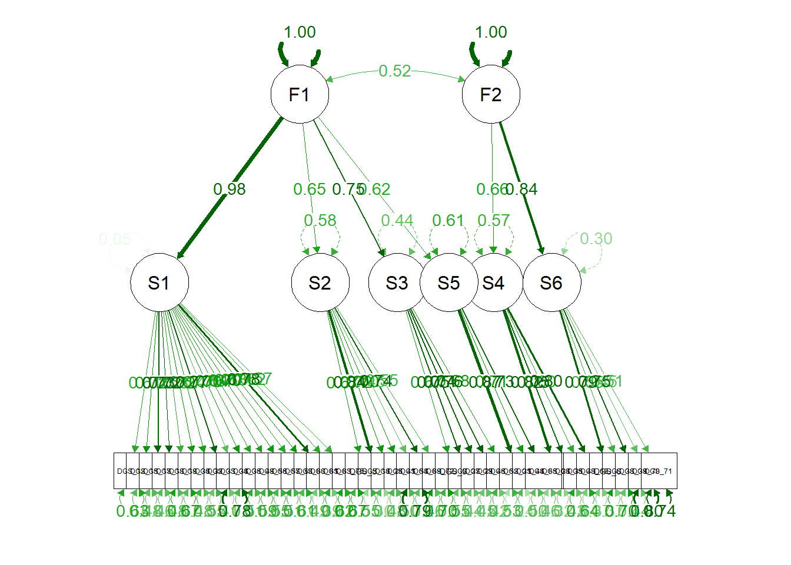

###cleaning
##rename
data_cleaned <- data
#prepare dataframe for different scales
DGS <- data_cleaned[grep("DGS_1",colnames(data_cleaned)):grep("DGS_75",colnames(data_cleaned))]
DGS <- DGS[,-c(grep("DGS_31",colnames(DGS)),grep("DGS_53",colnames(DGS)))]
HEXACO_C <- data_cleaned[grep("HEXACO_C_1",colnames(data_cleaned)):grep("HEXACO_C_10",colnames(data_cleaned))]# trimming based on IRT and EFA
DGS_fit_6C <- DGS %>%
select(c(
DGS_12,DGS_15,DGS_17,DGS_18,DGS_19,DGS_30,DGS_32,DGS_33,DGS_34,DGS_36,DGS_56,DGS_49,DGS_57,DGS_58,DGS_60,DGS_61,DGS_63,DGS_75,
DGS_5,DGS_10,DGS_26,DGS_41,DGS_54,DGS_69,DGS_72,
DGS_9,DGS_27,DGS_29,DGS_46,DGS_52,
DGS_28,DGS_35,DGS_48,DGS_68,
DGS_21,DGS_44,DGS_65,
DGS_6,DGS_38,DGS_39,DGS_70,DGS_71
))
EFA_fit_6C <- fa(DGS_fit_6C,
nfactors = 6,
rotate = "oblimin",
fm="ml")
EFA_fit_6C <- fa.sort(EFA_fit_6C)
EFA_fit_6C## Factor Analysis using method = ml
## Call: fa(r = DGS_fit_6C, nfactors = 6, rotate = "oblimin", fm = "ml")
## Standardized loadings (pattern matrix) based upon correlation matrix
## ML1 ML4 ML6 ML2 ML3 ML5 h2 u2 com
## DGS_33 0.68 0.20 0.00 0.02 0.00 -0.06 0.61 0.39 1.2
## DGS_18 0.66 0.05 -0.01 0.05 0.07 0.24 0.61 0.39 1.3
## DGS_61 0.62 0.14 0.04 0.02 0.12 0.00 0.60 0.40 1.2
## DGS_60 0.59 -0.11 0.18 0.00 0.14 -0.05 0.54 0.46 1.4
## DGS_56 0.59 0.00 -0.01 0.17 0.08 0.14 0.53 0.47 1.3
## DGS_32 0.59 0.01 0.08 0.07 0.05 -0.04 0.46 0.54 1.1
## DGS_17 0.57 0.09 0.10 0.09 0.06 -0.16 0.55 0.45 1.4
## DGS_15 0.57 0.29 -0.02 -0.02 0.07 -0.03 0.57 0.43 1.5
## DGS_30 0.57 0.15 0.10 -0.02 0.05 0.12 0.54 0.46 1.3
## DGS_75 0.57 -0.01 -0.03 0.08 0.04 0.00 0.35 0.65 1.1
## DGS_49 0.56 -0.12 0.08 0.17 0.11 0.11 0.53 0.47 1.5
## DGS_36 0.54 0.02 0.15 0.04 0.10 -0.05 0.49 0.51 1.3
## DGS_19 0.51 -0.13 0.10 0.07 0.12 0.01 0.38 0.62 1.4
## DGS_12 0.50 0.03 0.15 -0.05 0.07 -0.16 0.41 0.59 1.5
## DGS_57 0.48 0.36 0.06 0.04 0.00 -0.09 0.55 0.45 2.0
## DGS_34 0.44 0.04 0.19 -0.08 -0.11 -0.27 0.35 0.65 2.3
## DGS_63 0.44 -0.01 0.05 -0.06 0.35 -0.19 0.49 0.51 2.4
## DGS_58 0.40 0.23 0.13 0.06 0.05 -0.27 0.48 0.52 2.7
## DGS_10 0.08 0.79 -0.03 0.05 0.07 -0.02 0.71 0.29 1.0
## DGS_41 0.04 0.71 -0.02 -0.02 -0.01 0.08 0.52 0.48 1.0
## DGS_72 -0.07 0.64 0.07 -0.04 -0.06 0.15 0.39 0.61 1.2
## DGS_26 0.12 0.56 0.04 -0.04 0.11 0.00 0.49 0.51 1.2
## DGS_69 0.13 0.51 0.06 -0.04 0.26 -0.09 0.58 0.42 1.8
## DGS_5 0.15 0.48 0.03 0.01 0.15 0.12 0.44 0.56 1.6
## DGS_54 -0.11 0.46 0.24 -0.06 -0.04 -0.18 0.32 0.68 2.1
## DGS_29 -0.03 -0.01 0.78 0.11 -0.01 0.06 0.67 0.33 1.1
## DGS_52 -0.03 -0.09 0.76 0.13 -0.06 0.01 0.62 0.38 1.1
## DGS_9 -0.07 0.27 0.60 -0.06 0.16 0.01 0.54 0.46 1.6
## DGS_27 0.25 -0.05 0.59 -0.04 0.02 0.08 0.54 0.46 1.4
## DGS_46 0.31 0.14 0.48 0.00 -0.01 -0.02 0.57 0.43 1.9
## DGS_28 -0.07 0.02 -0.01 0.87 0.01 -0.02 0.71 0.29 1.0
## DGS_68 0.03 0.03 0.03 0.76 -0.04 0.00 0.61 0.39 1.0
## DGS_35 0.05 -0.01 0.08 0.72 -0.01 -0.04 0.57 0.43 1.0
## DGS_48 0.14 -0.07 -0.01 0.52 0.05 0.10 0.39 0.61 1.3
## DGS_21 0.00 0.06 0.01 0.00 0.85 0.01 0.76 0.24 1.0
## DGS_65 0.04 -0.09 -0.05 0.00 0.79 0.10 0.61 0.39 1.1
## DGS_44 0.09 0.30 0.09 -0.03 0.49 -0.09 0.59 0.41 1.9
## DGS_38 -0.08 0.05 0.05 0.03 0.10 0.69 0.51 0.49 1.1
## DGS_71 -0.13 0.09 0.00 0.10 0.11 0.67 0.50 0.50 1.2
## DGS_6 0.37 -0.08 0.16 0.06 -0.07 0.52 0.53 0.47 2.1
## DGS_70 0.07 0.20 0.16 -0.06 -0.06 0.45 0.28 0.72 1.8
## DGS_39 0.40 -0.10 0.08 0.14 -0.09 0.45 0.49 0.51 2.5
##
## ML1 ML4 ML6 ML2 ML3 ML5
## SS loadings 7.48 3.89 3.20 2.65 2.59 2.18
## Proportion Var 0.18 0.09 0.08 0.06 0.06 0.05
## Cumulative Var 0.18 0.27 0.35 0.41 0.47 0.52
## Proportion Explained 0.34 0.18 0.15 0.12 0.12 0.10
## Cumulative Proportion 0.34 0.52 0.66 0.78 0.90 1.00
##
## With factor correlations of
## ML1 ML4 ML6 ML2 ML3 ML5
## ML1 1.00 0.38 0.53 0.31 0.46 0.04
## ML4 0.38 1.00 0.30 -0.14 0.44 -0.08
## ML6 0.53 0.30 1.00 0.40 0.18 0.10
## ML2 0.31 -0.14 0.40 1.00 0.02 0.34
## ML3 0.46 0.44 0.18 0.02 1.00 0.06
## ML5 0.04 -0.08 0.10 0.34 0.06 1.00
##
## Mean item complexity = 1.5
## Test of the hypothesis that 6 factors are sufficient.
##
## df null model = 861 with the objective function = 22.97 with Chi Square = 18841.89
## df of the model are 624 and the objective function was 2
##
## The root mean square of the residuals (RMSR) is 0.03
## The df corrected root mean square of the residuals is 0.03
##
## The harmonic n.obs is 836 with the empirical chi square 908.3 with prob < 6.6e-13
## The total n.obs was 836 with Likelihood Chi Square = 1636.18 with prob < 9.3e-92
##
## Tucker Lewis Index of factoring reliability = 0.922
## RMSEA index = 0.044 and the 90 % confidence intervals are 0.041 0.047
## BIC = -2562.48
## Fit based upon off diagonal values = 0.99
## Measures of factor score adequacy
## ML1 ML4 ML6 ML2 ML3 ML5
## Correlation of (regression) scores with factors 0.96 0.94 0.93 0.93 0.93 0.90
## Multiple R square of scores with factors 0.93 0.88 0.87 0.87 0.86 0.81
## Minimum correlation of possible factor scores 0.86 0.77 0.73 0.74 0.73 0.62print(EFA_fit_6C$loadings)##
## Loadings:
## ML1 ML4 ML6 ML2 ML3 ML5
## DGS_33 0.677 0.196
## DGS_18 0.664 0.240
## DGS_61 0.617 0.139 0.116
## DGS_60 0.593 -0.107 0.176 0.144
## DGS_56 0.592 0.171 0.140
## DGS_32 0.588
## DGS_17 0.574 -0.164
## DGS_15 0.571 0.288
## DGS_30 0.568 0.152 0.124
## DGS_75 0.565
## DGS_49 0.556 -0.122 0.173 0.111 0.111
## DGS_36 0.539 0.152
## DGS_19 0.514 -0.125 0.117
## DGS_12 0.499 0.146 -0.164
## DGS_57 0.478 0.357
## DGS_34 0.445 0.191 -0.108 -0.271
## DGS_63 0.439 0.348 -0.186
## DGS_58 0.404 0.230 0.126 -0.268
## DGS_10 0.788
## DGS_41 0.711
## DGS_72 0.640 0.150
## DGS_26 0.117 0.563 0.108
## DGS_69 0.134 0.505 0.256
## DGS_5 0.154 0.483 0.150 0.117
## DGS_54 -0.111 0.463 0.239 -0.182
## DGS_29 0.782 0.108
## DGS_52 0.760 0.132
## DGS_9 0.265 0.602 0.155
## DGS_27 0.247 0.588
## DGS_46 0.315 0.140 0.478
## DGS_28 0.874
## DGS_68 0.760
## DGS_35 0.718
## DGS_48 0.140 0.521
## DGS_21 0.847
## DGS_65 0.789
## DGS_44 0.304 0.494
## DGS_38 0.103 0.692
## DGS_71 -0.133 0.101 0.109 0.665
## DGS_6 0.369 0.155 0.522
## DGS_70 0.200 0.157 0.454
## DGS_39 0.403 -0.104 0.140 0.453
##
## ML1 ML4 ML6 ML2 ML3 ML5
## SS loadings 6.132 3.234 2.448 2.321 2.001 2.087
## Proportion Var 0.146 0.077 0.058 0.055 0.048 0.050
## Cumulative Var 0.146 0.223 0.281 0.337 0.384 0.434# the current model is based on the 6 factors solution in Portfolios_4
# trim 67,74 because of the poor fit in factor 6 (<0.4)
#fit
EFA_fit_6C$rms # Root mean square of the residuals (lower the better)## [1] 0.02511861EFA_fit_6C$RMSEA # root mean squared error of approximation (lower the better)## RMSEA lower upper confidence
## 0.04403254 0.04147528 0.04668810 0.90000000EFA_fit_6C$TLI # tucker lewis index## [1] 0.92192871- ((EFA_fit_6C$STATISTIC-EFA_fit_6C$dof)/
(EFA_fit_6C$null.chisq-EFA_fit_6C$null.dof)) #CFI## [1] 0.9437078#Explore higher level structure
DGS_fit_2C <- DGS %>%
select(c(
DGS_12,DGS_15,DGS_17,DGS_18,DGS_19,DGS_30,DGS_32,DGS_33,DGS_34,DGS_36,DGS_56,DGS_49,DGS_57,DGS_58,DGS_60,DGS_61,DGS_63,DGS_75,
DGS_5,DGS_10,DGS_26,DGS_41,DGS_54,DGS_69,DGS_72,
DGS_9,DGS_27,DGS_29,DGS_46,DGS_52,
DGS_28,DGS_35,DGS_48,DGS_68,
DGS_21,DGS_44,DGS_65,
DGS_6,DGS_38,DGS_39,DGS_70,DGS_71
))
EFA_fit_2C <- fa(DGS_fit_2C,
nfactors = 2,
rotate = "oblimin",
fm="ml")
EFA_fit_2C <- fa.sort(EFA_fit_2C)
EFA_fit_2C## Factor Analysis using method = ml
## Call: fa(r = DGS_fit_2C, nfactors = 2, rotate = "oblimin", fm = "ml")
## Standardized loadings (pattern matrix) based upon correlation matrix
## ML1 ML2 h2 u2 com
## DGS_69 0.79 -0.24 0.565 0.44 1.2
## DGS_10 0.77 -0.26 0.548 0.45 1.2
## DGS_44 0.74 -0.17 0.507 0.49 1.1
## DGS_15 0.72 0.06 0.553 0.45 1.0
## DGS_57 0.70 0.07 0.524 0.48 1.0
## DGS_26 0.69 -0.21 0.434 0.57 1.2
## DGS_33 0.68 0.19 0.565 0.44 1.2
## DGS_61 0.67 0.22 0.580 0.42 1.2
## DGS_58 0.64 0.03 0.420 0.58 1.0
## DGS_63 0.63 0.01 0.402 0.60 1.0
## DGS_41 0.62 -0.24 0.358 0.64 1.3
## DGS_5 0.62 -0.05 0.369 0.63 1.0
## DGS_21 0.62 -0.09 0.360 0.64 1.0
## DGS_17 0.60 0.23 0.498 0.50 1.3
## DGS_30 0.60 0.27 0.518 0.48 1.4
## DGS_36 0.55 0.29 0.477 0.52 1.5
## DGS_46 0.54 0.30 0.481 0.52 1.6
## DGS_12 0.54 0.13 0.353 0.65 1.1
## DGS_9 0.54 0.10 0.335 0.66 1.1
## DGS_60 0.52 0.33 0.480 0.52 1.7
## DGS_18 0.50 0.41 0.542 0.46 1.9
## DGS_32 0.49 0.33 0.435 0.56 1.7
## DGS_72 0.47 -0.20 0.210 0.79 1.4
## DGS_54 0.46 -0.26 0.207 0.79 1.6
## DGS_65 0.44 0.01 0.199 0.80 1.0
## DGS_34 0.44 0.05 0.210 0.79 1.0
## DGS_75 0.40 0.29 0.311 0.69 1.8
## DGS_28 -0.17 0.70 0.452 0.55 1.1
## DGS_68 -0.10 0.69 0.441 0.56 1.0
## DGS_35 -0.08 0.68 0.437 0.56 1.0
## DGS_39 0.04 0.62 0.394 0.61 1.0
## DGS_48 -0.06 0.60 0.348 0.65 1.0
## DGS_6 0.08 0.59 0.380 0.62 1.0
## DGS_49 0.34 0.54 0.508 0.49 1.7
## DGS_52 0.15 0.52 0.336 0.66 1.2
## DGS_29 0.25 0.50 0.383 0.62 1.5
## DGS_56 0.41 0.46 0.497 0.50 2.0
## DGS_27 0.38 0.42 0.410 0.59 2.0
## DGS_19 0.36 0.38 0.350 0.65 2.0
## DGS_38 -0.07 0.33 0.099 0.90 1.1
## DGS_71 -0.10 0.32 0.093 0.91 1.2
## DGS_70 0.16 0.21 0.092 0.91 1.9
##
## ML1 ML2
## SS loadings 10.89 5.76
## Proportion Var 0.26 0.14
## Cumulative Var 0.26 0.40
## Proportion Explained 0.65 0.35
## Cumulative Proportion 0.65 1.00
##
## With factor correlations of
## ML1 ML2
## ML1 1.00 0.29
## ML2 0.29 1.00
##
## Mean item complexity = 1.3
## Test of the hypothesis that 2 factors are sufficient.
##
## df null model = 861 with the objective function = 22.97 with Chi Square = 18841.89
## df of the model are 778 and the objective function was 6.1
##
## The root mean square of the residuals (RMSR) is 0.07
## The df corrected root mean square of the residuals is 0.07
##
## The harmonic n.obs is 836 with the empirical chi square 6202.06 with prob < 0
## The total n.obs was 836 with Likelihood Chi Square = 4997.94 with prob < 0
##
## Tucker Lewis Index of factoring reliability = 0.74
## RMSEA index = 0.081 and the 90 % confidence intervals are 0.078 0.083
## BIC = -236.94
## Fit based upon off diagonal values = 0.96
## Measures of factor score adequacy
## ML1 ML2
## Correlation of (regression) scores with factors 0.98 0.95
## Multiple R square of scores with factors 0.95 0.90
## Minimum correlation of possible factor scores 0.90 0.80print(EFA_fit_2C$loadings, cutoff = 0.3)##
## Loadings:
## ML1 ML2
## DGS_69 0.786
## DGS_10 0.773
## DGS_44 0.743
## DGS_15 0.722
## DGS_57 0.701
## DGS_26 0.688
## DGS_33 0.676
## DGS_61 0.667
## DGS_58 0.637
## DGS_63 0.630
## DGS_41 0.622
## DGS_5 0.620
## DGS_21 0.619
## DGS_17 0.602
## DGS_30 0.596
## DGS_36 0.549
## DGS_46 0.542 0.302
## DGS_12 0.542
## DGS_9 0.541
## DGS_60 0.522 0.328
## DGS_18 0.503 0.410
## DGS_32 0.486 0.326
## DGS_72 0.474
## DGS_54 0.457
## DGS_65 0.443
## DGS_34 0.439
## DGS_75 0.398
## DGS_28 0.701
## DGS_68 0.686
## DGS_35 0.679
## DGS_39 0.616
## DGS_48 0.604
## DGS_6 0.587
## DGS_49 0.340 0.536
## DGS_52 0.517
## DGS_29 0.497
## DGS_56 0.412 0.464
## DGS_27 0.380 0.417
## DGS_19 0.360 0.376
## DGS_38 0.328
## DGS_71 0.319
## DGS_70
##
## ML1 ML2
## SS loadings 10.498 5.367
## Proportion Var 0.250 0.128
## Cumulative Var 0.250 0.378#fit
EFA_fit_2C$rms # Root mean square of the residuals (lower the better)## [1] 0.06563691EFA_fit_2C$RMSEA # root mean squared error of approximation (lower the better)## RMSEA lower upper confidence
## 0.08054009 0.07847216 0.08273750 0.90000000EFA_fit_2C$TLI # tucker lewis index## [1] 0.7398291- ((EFA_fit_2C$STATISTIC-EFA_fit_2C$dof)/
(EFA_fit_2C$null.chisq-EFA_fit_2C$null.dof)) #CFI## [1] 0.7653098###CFA for testing a hierartical structure
{DGS_2M_model <- '
S1 =~ DGS_12+DGS_15+DGS_17+DGS_18+DGS_19+DGS_30+DGS_32+DGS_33+DGS_34+DGS_36+DGS_49+DGS_56+DGS_57+DGS_58+DGS_60+DGS_61+DGS_63+DGS_75
S2 =~ DGS_5+DGS_10+DGS_26+DGS_41+DGS_54+DGS_69+DGS_72
S3 =~ DGS_9+DGS_27+DGS_29+DGS_46+DGS_52
S4 =~ DGS_28+DGS_35+DGS_48+DGS_68
S5 =~ DGS_21+DGS_44+DGS_65
S6 =~ DGS_6+DGS_38+DGS_39+DGS_70+DGS_71
F1 =~ S1 + S3 + S2 + S5
F2 =~ S4 + S6
'}
DGS_2M_fit <- cfa(
model = DGS_2M_model,
data = DGS,
std.lv = TRUE)
summary(DGS_2M_fit,
standardized = TRUE,
rsquare = TRUE,
fit.measures=TRUE)## lavaan 0.6.15 ended normally after 95 iterations
##
## Estimator ML
## Optimization method NLMINB
## Number of model parameters 91
##
## Number of observations 836
##
## Model Test User Model:
##
## Test statistic 4152.103
## Degrees of freedom 812
## P-value (Chi-square) 0.000
##
## Model Test Baseline Model:
##
## Test statistic 19205.630
## Degrees of freedom 861
## P-value 0.000
##
## User Model versus Baseline Model:
##
## Comparative Fit Index (CFI) 0.818
## Tucker-Lewis Index (TLI) 0.807
##
## Loglikelihood and Information Criteria:
##
## Loglikelihood user model (H0) -52995.376
## Loglikelihood unrestricted model (H1) NA
##
## Akaike (AIC) 106172.753
## Bayesian (BIC) 106603.058
## Sample-size adjusted Bayesian (SABIC) 106314.073
##
## Root Mean Square Error of Approximation:
##
## RMSEA 0.070
## 90 Percent confidence interval - lower 0.068
## 90 Percent confidence interval - upper 0.072
## P-value H_0: RMSEA <= 0.050 0.000
## P-value H_0: RMSEA >= 0.080 0.000
##
## Standardized Root Mean Square Residual:
##
## SRMR 0.090
##
## Parameter Estimates:
##
## Standard errors Standard
## Information Expected
## Information saturated (h1) model Structured
##
## Latent Variables:
## Estimate Std.Err z-value P(>|z|) Std.lv Std.all
## S1 =~
## DGS_12 0.134 0.045 2.980 0.003 0.626 0.607
## DGS_15 0.172 0.058 2.993 0.003 0.807 0.721
## DGS_17 0.179 0.060 2.994 0.003 0.838 0.734
## DGS_18 0.217 0.072 2.993 0.003 1.016 0.724
## DGS_19 0.148 0.050 2.975 0.003 0.692 0.578
## DGS_30 0.192 0.064 2.993 0.003 0.902 0.722
## DGS_32 0.180 0.060 2.988 0.003 0.842 0.672
## DGS_33 0.184 0.061 2.997 0.003 0.860 0.768
## DGS_34 0.117 0.040 2.951 0.003 0.550 0.473
## DGS_36 0.192 0.064 2.992 0.003 0.900 0.703
## DGS_49 0.195 0.065 2.985 0.003 0.912 0.641
## DGS_56 0.197 0.066 2.988 0.003 0.922 0.671
## DGS_57 0.168 0.056 2.991 0.003 0.786 0.699
## DGS_58 0.142 0.048 2.983 0.003 0.667 0.627
## DGS_60 0.191 0.064 2.993 0.003 0.897 0.713
## DGS_61 0.198 0.066 2.998 0.003 0.927 0.781
## DGS_63 0.148 0.050 2.982 0.003 0.694 0.619
## DGS_75 0.155 0.052 2.974 0.003 0.728 0.570
## S2 =~
## DGS_5 0.713 0.036 19.668 0.000 0.939 0.674
## DGS_10 0.836 0.033 25.258 0.000 1.101 0.838
## DGS_26 0.670 0.032 21.172 0.000 0.882 0.719
## DGS_41 0.763 0.037 20.664 0.000 1.004 0.704
## DGS_54 0.408 0.032 12.762 0.000 0.538 0.455
## DGS_69 0.727 0.033 21.769 0.000 0.957 0.736
## DGS_72 0.634 0.041 15.629 0.000 0.835 0.549
## S3 =~
## DGS_9 0.647 0.036 17.826 0.000 0.972 0.670
## DGS_27 0.729 0.037 19.773 0.000 1.096 0.749
## DGS_29 0.863 0.044 19.668 0.000 1.296 0.744
## DGS_46 0.691 0.034 20.086 0.000 1.038 0.762
## DGS_52 0.747 0.041 18.139 0.000 1.122 0.683
## S4 =~
## DGS_28 0.992 0.056 17.677 0.000 1.319 0.823
## DGS_35 0.896 0.053 16.781 0.000 1.191 0.753
## DGS_48 0.674 0.047 14.266 0.000 0.896 0.602
## DGS_68 0.991 0.057 17.364 0.000 1.318 0.796
## S5 =~
## DGS_21 1.172 0.048 24.530 0.000 1.495 0.874
## DGS_44 0.810 0.040 20.499 0.000 1.034 0.710
## DGS_65 1.010 0.047 21.295 0.000 1.289 0.734
## S6 =~
## DGS_6 0.680 0.090 7.564 0.000 1.236 0.794
## DGS_38 0.401 0.056 7.140 0.000 0.730 0.551
## DGS_39 0.665 0.088 7.546 0.000 1.210 0.751
## DGS_70 0.412 0.061 6.726 0.000 0.749 0.447
## DGS_71 0.370 0.053 6.996 0.000 0.673 0.509
## F1 =~
## S1 4.578 1.597 2.866 0.004 0.977 0.977
## S3 1.121 0.076 14.777 0.000 0.746 0.746
## S2 0.857 0.058 14.831 0.000 0.651 0.651
## S5 0.793 0.057 13.949 0.000 0.621 0.621
## F2 =~
## S4 0.876 0.097 9.070 0.000 0.659 0.659
## S6 1.520 0.278 5.472 0.000 0.835 0.835
##
## Covariances:
## Estimate Std.Err z-value P(>|z|) Std.lv Std.all
## F1 ~~
## F2 0.517 0.038 13.444 0.000 0.517 0.517
##
## Variances:
## Estimate Std.Err z-value P(>|z|) Std.lv Std.all
## .DGS_12 0.673 0.034 19.774 0.000 0.673 0.632
## .DGS_15 0.602 0.031 19.197 0.000 0.602 0.480
## .DGS_17 0.600 0.031 19.095 0.000 0.600 0.461
## .DGS_18 0.938 0.049 19.177 0.000 0.938 0.476
## .DGS_19 0.953 0.048 19.867 0.000 0.953 0.666
## .DGS_30 0.748 0.039 19.190 0.000 0.748 0.479
## .DGS_32 0.860 0.044 19.495 0.000 0.860 0.548
## .DGS_33 0.515 0.027 18.787 0.000 0.515 0.410
## .DGS_34 1.047 0.052 20.113 0.000 1.047 0.776
## .DGS_36 0.830 0.043 19.319 0.000 0.830 0.506
## .DGS_49 1.192 0.061 19.640 0.000 1.192 0.589
## .DGS_56 1.041 0.053 19.503 0.000 1.041 0.550
## .DGS_57 0.646 0.033 19.342 0.000 0.646 0.511
## .DGS_58 0.687 0.035 19.698 0.000 0.687 0.607
## .DGS_60 0.777 0.040 19.252 0.000 0.777 0.492
## .DGS_61 0.549 0.029 18.641 0.000 0.549 0.390
## .DGS_63 0.775 0.039 19.729 0.000 0.775 0.617
## .DGS_75 1.099 0.055 19.889 0.000 1.099 0.675
## .DGS_5 1.060 0.058 18.213 0.000 1.060 0.546
## .DGS_10 0.515 0.037 14.092 0.000 0.515 0.298
## .DGS_26 0.729 0.041 17.569 0.000 0.729 0.484
## .DGS_41 1.029 0.058 17.808 0.000 1.029 0.505
## .DGS_54 1.110 0.056 19.754 0.000 1.110 0.793
## .DGS_69 0.775 0.045 17.254 0.000 0.775 0.458
## .DGS_72 1.619 0.084 19.299 0.000 1.619 0.699
## .DGS_9 1.160 0.065 17.888 0.000 1.160 0.551
## .DGS_27 0.942 0.057 16.423 0.000 0.942 0.440
## .DGS_29 1.354 0.082 16.530 0.000 1.354 0.446
## .DGS_46 0.780 0.049 16.078 0.000 0.780 0.420
## .DGS_52 1.443 0.081 17.708 0.000 1.443 0.534
## .DGS_28 0.830 0.064 12.956 0.000 0.830 0.323
## .DGS_35 1.085 0.069 15.806 0.000 1.085 0.433
## .DGS_48 1.416 0.077 18.492 0.000 1.416 0.638
## .DGS_68 1.005 0.071 14.237 0.000 1.005 0.367
## .DGS_21 0.688 0.080 8.612 0.000 0.688 0.235
## .DGS_44 1.054 0.064 16.464 0.000 1.054 0.497
## .DGS_65 1.419 0.090 15.728 0.000 1.419 0.461
## .DGS_6 0.897 0.073 12.320 0.000 0.897 0.370
## .DGS_38 1.224 0.066 18.435 0.000 1.224 0.697
## .DGS_39 1.129 0.080 14.148 0.000 1.129 0.435
## .DGS_70 2.249 0.116 19.307 0.000 2.249 0.801
## .DGS_71 1.295 0.069 18.839 0.000 1.295 0.741
## .S1 1.000 0.046 0.046
## .S2 1.000 0.577 0.577
## .S3 1.000 0.443 0.443
## .S4 1.000 0.566 0.566
## .S5 1.000 0.614 0.614
## .S6 1.000 0.302 0.302
## F1 1.000 1.000 1.000
## F2 1.000 1.000 1.000
##
## R-Square:
## Estimate
## DGS_12 0.368
## DGS_15 0.520
## DGS_17 0.539
## DGS_18 0.524
## DGS_19 0.334
## DGS_30 0.521
## DGS_32 0.452
## DGS_33 0.590
## DGS_34 0.224
## DGS_36 0.494
## DGS_49 0.411
## DGS_56 0.450
## DGS_57 0.489
## DGS_58 0.393
## DGS_60 0.508
## DGS_61 0.610
## DGS_63 0.383
## DGS_75 0.325
## DGS_5 0.454
## DGS_10 0.702
## DGS_26 0.516
## DGS_41 0.495
## DGS_54 0.207
## DGS_69 0.542
## DGS_72 0.301
## DGS_9 0.449
## DGS_27 0.560
## DGS_29 0.554
## DGS_46 0.580
## DGS_52 0.466
## DGS_28 0.677
## DGS_35 0.567
## DGS_48 0.362
## DGS_68 0.633
## DGS_21 0.765
## DGS_44 0.503
## DGS_65 0.539
## DGS_6 0.630
## DGS_38 0.303
## DGS_39 0.565
## DGS_70 0.199
## DGS_71 0.259
## S1 0.954
## S2 0.423
## S3 0.557
## S4 0.434
## S5 0.386
## S6 0.698parameterestimates(DGS_2M_fit,
standardized = TRUE)## lhs op rhs est se z pvalue ci.lower ci.upper std.lv std.all
## 1 S1 =~ DGS_12 0.134 0.045 2.980 0.003 0.046 0.222 0.626 0.607
## 2 S1 =~ DGS_15 0.172 0.058 2.993 0.003 0.059 0.285 0.807 0.721
## 3 S1 =~ DGS_17 0.179 0.060 2.994 0.003 0.062 0.296 0.838 0.734
## 4 S1 =~ DGS_18 0.217 0.072 2.993 0.003 0.075 0.359 1.016 0.724
## 5 S1 =~ DGS_19 0.148 0.050 2.975 0.003 0.050 0.245 0.692 0.578
## 6 S1 =~ DGS_30 0.192 0.064 2.993 0.003 0.066 0.319 0.902 0.722
## 7 S1 =~ DGS_32 0.180 0.060 2.988 0.003 0.062 0.297 0.842 0.672
## 8 S1 =~ DGS_33 0.184 0.061 2.997 0.003 0.064 0.304 0.860 0.768
## 9 S1 =~ DGS_34 0.117 0.040 2.951 0.003 0.039 0.195 0.550 0.473
## 10 S1 =~ DGS_36 0.192 0.064 2.992 0.003 0.066 0.318 0.900 0.703
## 11 S1 =~ DGS_49 0.195 0.065 2.985 0.003 0.067 0.323 0.912 0.641
## 12 S1 =~ DGS_56 0.197 0.066 2.988 0.003 0.068 0.326 0.922 0.671
## 13 S1 =~ DGS_57 0.168 0.056 2.991 0.003 0.058 0.278 0.786 0.699
## 14 S1 =~ DGS_58 0.142 0.048 2.983 0.003 0.049 0.236 0.667 0.627
## 15 S1 =~ DGS_60 0.191 0.064 2.993 0.003 0.066 0.317 0.897 0.713
## 16 S1 =~ DGS_61 0.198 0.066 2.998 0.003 0.068 0.327 0.927 0.781
## 17 S1 =~ DGS_63 0.148 0.050 2.982 0.003 0.051 0.245 0.694 0.619
## 18 S1 =~ DGS_75 0.155 0.052 2.974 0.003 0.053 0.258 0.728 0.570
## 19 S2 =~ DGS_5 0.713 0.036 19.668 0.000 0.642 0.784 0.939 0.674
## 20 S2 =~ DGS_10 0.836 0.033 25.258 0.000 0.771 0.901 1.101 0.838
## 21 S2 =~ DGS_26 0.670 0.032 21.172 0.000 0.608 0.732 0.882 0.719
## 22 S2 =~ DGS_41 0.763 0.037 20.664 0.000 0.690 0.835 1.004 0.704
## 23 S2 =~ DGS_54 0.408 0.032 12.762 0.000 0.346 0.471 0.538 0.455
## 24 S2 =~ DGS_69 0.727 0.033 21.769 0.000 0.661 0.792 0.957 0.736
## 25 S2 =~ DGS_72 0.634 0.041 15.629 0.000 0.555 0.714 0.835 0.549
## 26 S3 =~ DGS_9 0.647 0.036 17.826 0.000 0.576 0.718 0.972 0.670
## 27 S3 =~ DGS_27 0.729 0.037 19.773 0.000 0.657 0.802 1.096 0.749
## 28 S3 =~ DGS_29 0.863 0.044 19.668 0.000 0.777 0.949 1.296 0.744
## 29 S3 =~ DGS_46 0.691 0.034 20.086 0.000 0.624 0.759 1.038 0.762
## 30 S3 =~ DGS_52 0.747 0.041 18.139 0.000 0.666 0.827 1.122 0.683
## 31 S4 =~ DGS_28 0.992 0.056 17.677 0.000 0.882 1.102 1.319 0.823
## 32 S4 =~ DGS_35 0.896 0.053 16.781 0.000 0.791 1.001 1.191 0.753
## 33 S4 =~ DGS_48 0.674 0.047 14.266 0.000 0.582 0.767 0.896 0.602
## 34 S4 =~ DGS_68 0.991 0.057 17.364 0.000 0.879 1.103 1.318 0.796
## 35 S5 =~ DGS_21 1.172 0.048 24.530 0.000 1.078 1.265 1.495 0.874
## 36 S5 =~ DGS_44 0.810 0.040 20.499 0.000 0.733 0.888 1.034 0.710
## 37 S5 =~ DGS_65 1.010 0.047 21.295 0.000 0.917 1.103 1.289 0.734
## 38 S6 =~ DGS_6 0.680 0.090 7.564 0.000 0.504 0.856 1.236 0.794
## 39 S6 =~ DGS_38 0.401 0.056 7.140 0.000 0.291 0.512 0.730 0.551
## 40 S6 =~ DGS_39 0.665 0.088 7.546 0.000 0.492 0.838 1.210 0.751
## 41 S6 =~ DGS_70 0.412 0.061 6.726 0.000 0.292 0.531 0.749 0.447
## 42 S6 =~ DGS_71 0.370 0.053 6.996 0.000 0.266 0.474 0.673 0.509
## 43 F1 =~ S1 4.578 1.597 2.866 0.004 1.448 7.708 0.977 0.977
## 44 F1 =~ S3 1.121 0.076 14.777 0.000 0.972 1.270 0.746 0.746
## 45 F1 =~ S2 0.857 0.058 14.831 0.000 0.744 0.970 0.651 0.651
## 46 F1 =~ S5 0.793 0.057 13.949 0.000 0.681 0.904 0.621 0.621
## 47 F2 =~ S4 0.876 0.097 9.070 0.000 0.687 1.066 0.659 0.659
## 48 F2 =~ S6 1.520 0.278 5.472 0.000 0.975 2.064 0.835 0.835
## 49 DGS_12 ~~ DGS_12 0.673 0.034 19.774 0.000 0.607 0.740 0.673 0.632
## 50 DGS_15 ~~ DGS_15 0.602 0.031 19.197 0.000 0.541 0.664 0.602 0.480
## 51 DGS_17 ~~ DGS_17 0.600 0.031 19.095 0.000 0.538 0.661 0.600 0.461
## 52 DGS_18 ~~ DGS_18 0.938 0.049 19.177 0.000 0.842 1.034 0.938 0.476
## 53 DGS_19 ~~ DGS_19 0.953 0.048 19.867 0.000 0.859 1.047 0.953 0.666
## 54 DGS_30 ~~ DGS_30 0.748 0.039 19.190 0.000 0.671 0.824 0.748 0.479
## 55 DGS_32 ~~ DGS_32 0.860 0.044 19.495 0.000 0.773 0.946 0.860 0.548
## 56 DGS_33 ~~ DGS_33 0.515 0.027 18.787 0.000 0.461 0.569 0.515 0.410
## 57 DGS_34 ~~ DGS_34 1.047 0.052 20.113 0.000 0.945 1.149 1.047 0.776
## 58 DGS_36 ~~ DGS_36 0.830 0.043 19.319 0.000 0.745 0.914 0.830 0.506
## 59 DGS_49 ~~ DGS_49 1.192 0.061 19.640 0.000 1.073 1.311 1.192 0.589
## 60 DGS_56 ~~ DGS_56 1.041 0.053 19.503 0.000 0.936 1.145 1.041 0.550
## 61 DGS_57 ~~ DGS_57 0.646 0.033 19.342 0.000 0.580 0.711 0.646 0.511
## 62 DGS_58 ~~ DGS_58 0.687 0.035 19.698 0.000 0.619 0.756 0.687 0.607
## 63 DGS_60 ~~ DGS_60 0.777 0.040 19.252 0.000 0.698 0.856 0.777 0.492
## 64 DGS_61 ~~ DGS_61 0.549 0.029 18.641 0.000 0.492 0.607 0.549 0.390
## 65 DGS_63 ~~ DGS_63 0.775 0.039 19.729 0.000 0.698 0.852 0.775 0.617
## 66 DGS_75 ~~ DGS_75 1.099 0.055 19.889 0.000 0.991 1.208 1.099 0.675
## 67 DGS_5 ~~ DGS_5 1.060 0.058 18.213 0.000 0.946 1.174 1.060 0.546
## 68 DGS_10 ~~ DGS_10 0.515 0.037 14.092 0.000 0.443 0.587 0.515 0.298
## 69 DGS_26 ~~ DGS_26 0.729 0.041 17.569 0.000 0.648 0.810 0.729 0.484
## 70 DGS_41 ~~ DGS_41 1.029 0.058 17.808 0.000 0.916 1.142 1.029 0.505
## 71 DGS_54 ~~ DGS_54 1.110 0.056 19.754 0.000 1.000 1.221 1.110 0.793
## 72 DGS_69 ~~ DGS_69 0.775 0.045 17.254 0.000 0.687 0.863 0.775 0.458
## 73 DGS_72 ~~ DGS_72 1.619 0.084 19.299 0.000 1.455 1.784 1.619 0.699
## 74 DGS_9 ~~ DGS_9 1.160 0.065 17.888 0.000 1.033 1.287 1.160 0.551
## 75 DGS_27 ~~ DGS_27 0.942 0.057 16.423 0.000 0.830 1.054 0.942 0.440
## 76 DGS_29 ~~ DGS_29 1.354 0.082 16.530 0.000 1.193 1.514 1.354 0.446
## 77 DGS_46 ~~ DGS_46 0.780 0.049 16.078 0.000 0.685 0.875 0.780 0.420
## 78 DGS_52 ~~ DGS_52 1.443 0.081 17.708 0.000 1.283 1.603 1.443 0.534
## 79 DGS_28 ~~ DGS_28 0.830 0.064 12.956 0.000 0.705 0.956 0.830 0.323
## 80 DGS_35 ~~ DGS_35 1.085 0.069 15.806 0.000 0.951 1.220 1.085 0.433
## 81 DGS_48 ~~ DGS_48 1.416 0.077 18.492 0.000 1.266 1.566 1.416 0.638
## 82 DGS_68 ~~ DGS_68 1.005 0.071 14.237 0.000 0.867 1.144 1.005 0.367
## 83 DGS_21 ~~ DGS_21 0.688 0.080 8.612 0.000 0.531 0.844 0.688 0.235
## 84 DGS_44 ~~ DGS_44 1.054 0.064 16.464 0.000 0.928 1.179 1.054 0.497
## 85 DGS_65 ~~ DGS_65 1.419 0.090 15.728 0.000 1.243 1.596 1.419 0.461
## 86 DGS_6 ~~ DGS_6 0.897 0.073 12.320 0.000 0.754 1.040 0.897 0.370
## 87 DGS_38 ~~ DGS_38 1.224 0.066 18.435 0.000 1.094 1.354 1.224 0.697
## 88 DGS_39 ~~ DGS_39 1.129 0.080 14.148 0.000 0.972 1.285 1.129 0.435
## 89 DGS_70 ~~ DGS_70 2.249 0.116 19.307 0.000 2.021 2.478 2.249 0.801
## 90 DGS_71 ~~ DGS_71 1.295 0.069 18.839 0.000 1.160 1.430 1.295 0.741
## 91 S1 ~~ S1 1.000 0.000 NA NA 1.000 1.000 0.046 0.046
## 92 S2 ~~ S2 1.000 0.000 NA NA 1.000 1.000 0.577 0.577
## 93 S3 ~~ S3 1.000 0.000 NA NA 1.000 1.000 0.443 0.443
## 94 S4 ~~ S4 1.000 0.000 NA NA 1.000 1.000 0.566 0.566
## 95 S5 ~~ S5 1.000 0.000 NA NA 1.000 1.000 0.614 0.614
## 96 S6 ~~ S6 1.000 0.000 NA NA 1.000 1.000 0.302 0.302
## 97 F1 ~~ F1 1.000 0.000 NA NA 1.000 1.000 1.000 1.000
## 98 F2 ~~ F2 1.000 0.000 NA NA 1.000 1.000 1.000 1.000
## 99 F1 ~~ F2 0.517 0.038 13.444 0.000 0.442 0.592 0.517 0.517
## std.nox
## 1 0.607
## 2 0.721
## 3 0.734
## 4 0.724
## 5 0.578
## 6 0.722
## 7 0.672
## 8 0.768
## 9 0.473
## 10 0.703
## 11 0.641
## 12 0.671
## 13 0.699
## 14 0.627
## 15 0.713
## 16 0.781
## 17 0.619
## 18 0.570
## 19 0.674
## 20 0.838
## 21 0.719
## 22 0.704
## 23 0.455
## 24 0.736
## 25 0.549
## 26 0.670
## 27 0.749
## 28 0.744
## 29 0.762
## 30 0.683
## 31 0.823
## 32 0.753
## 33 0.602
## 34 0.796
## 35 0.874
## 36 0.710
## 37 0.734
## 38 0.794
## 39 0.551
## 40 0.751
## 41 0.447
## 42 0.509
## 43 0.977
## 44 0.746
## 45 0.651
## 46 0.621
## 47 0.659
## 48 0.835
## 49 0.632
## 50 0.480
## 51 0.461
## 52 0.476
## 53 0.666
## 54 0.479
## 55 0.548
## 56 0.410
## 57 0.776
## 58 0.506
## 59 0.589
## 60 0.550
## 61 0.511
## 62 0.607
## 63 0.492
## 64 0.390
## 65 0.617
## 66 0.675
## 67 0.546
## 68 0.298
## 69 0.484
## 70 0.505
## 71 0.793
## 72 0.458
## 73 0.699
## 74 0.551
## 75 0.440
## 76 0.446
## 77 0.420
## 78 0.534
## 79 0.323
## 80 0.433
## 81 0.638
## 82 0.367
## 83 0.235
## 84 0.497
## 85 0.461
## 86 0.370
## 87 0.697
## 88 0.435
## 89 0.801
## 90 0.741
## 91 0.046
## 92 0.577
## 93 0.443
## 94 0.566
## 95 0.614
## 96 0.302
## 97 1.000
## 98 1.000
## 99 0.517fitmeasures(DGS_2M_fit)## npar fmin chisq
## 91.000 2.483 4152.103
## df pvalue baseline.chisq
## 812.000 0.000 19205.630
## baseline.df baseline.pvalue cfi
## 861.000 0.000 0.818
## tli nnfi rfi
## 0.807 0.807 0.771
## nfi pnfi ifi
## 0.784 0.739 0.818
## rni logl unrestricted.logl
## 0.818 -52995.376 NA
## aic bic ntotal
## 106172.753 106603.058 836.000
## bic2 rmsea rmsea.ci.lower
## 106314.073 0.070 0.068
## rmsea.ci.upper rmsea.ci.level rmsea.pvalue
## 0.072 0.900 0.000
## rmsea.close.h0 rmsea.notclose.pvalue rmsea.notclose.h0
## 0.050 0.000 0.080
## rmr rmr_nomean srmr
## 0.181 0.181 0.090
## srmr_bentler srmr_bentler_nomean crmr
## 0.090 0.090 0.092
## crmr_nomean srmr_mplus srmr_mplus_nomean
## 0.092 0.090 0.090
## cn_05 cn_01 gfi
## 178.062 183.957 0.761
## agfi pgfi mfi
## 0.734 0.684 0.136
## ecvi
## 5.184modificationindices(DGS_2M_fit,sort = T)## lhs op rhs mi epc sepc.lv sepc.all sepc.nox
## 1251 DGS_38 ~~ DGS_71 222.402 0.725 0.725 0.576 0.576
## 1151 DGS_29 ~~ DGS_52 178.738 0.821 0.821 0.588 0.588
## 152 S2 =~ DGS_44 124.533 0.405 0.534 0.367 0.367
## 1264 S2 ~~ S5 103.058 0.506 0.506 0.506 0.506
## 142 S2 =~ DGS_9 96.802 0.383 0.504 0.347 0.347
## 759 DGS_49 ~~ DGS_56 93.484 0.390 0.390 0.350 0.350
## 276 S6 =~ DGS_18 84.774 0.220 0.400 0.285 0.285
## 362 F2 =~ DGS_49 79.124 0.525 0.525 0.369 0.369
## 110 S1 =~ DGS_46 77.805 0.119 0.559 0.410 0.410
## 338 F1 =~ DGS_46 76.934 0.596 0.596 0.437 0.437
## 263 S5 =~ DGS_52 76.807 -0.395 -0.504 -0.307 -0.307
## 1272 S3 ~~ F2 76.422 0.447 0.447 0.447 0.447
## 1271 S3 ~~ F1 76.422 -0.865 -0.865 -0.865 -0.865
## 206 S4 =~ DGS_49 76.004 0.293 0.390 0.274 0.274
## 355 F2 =~ DGS_18 74.613 0.458 0.458 0.326 0.326
## 1266 S2 ~~ F1 72.871 0.768 0.768 0.768 0.768
## 1267 S2 ~~ F2 72.870 -0.397 -0.397 -0.397 -0.397
## 1228 DGS_21 ~~ DGS_65 71.761 0.958 0.958 0.970 0.970
## 345 F1 =~ DGS_44 71.760 0.520 0.520 0.357 0.357
## 125 S2 =~ DGS_15 70.827 0.260 0.343 0.306 0.306
## 146 S2 =~ DGS_52 68.227 -0.361 -0.475 -0.289 -0.289
## 117 S1 =~ DGS_44 66.863 0.103 0.480 0.330 0.330
## 1263 S2 ~~ S4 64.503 -0.406 -0.406 -0.406 -0.406
## 283 S6 =~ DGS_49 59.809 0.206 0.374 0.263 0.263
## 250 S5 =~ DGS_63 59.552 0.272 0.347 0.310 0.310
## 363 F2 =~ DGS_56 58.810 0.424 0.424 0.309 0.309
## 136 S2 =~ DGS_57 57.017 0.241 0.317 0.282 0.282
## 257 S5 =~ DGS_69 56.346 0.238 0.304 0.234 0.234
## 339 F1 =~ DGS_52 55.864 -0.635 -0.635 -0.386 -0.386
## 207 S4 =~ DGS_56 53.875 0.232 0.308 0.224 0.224
## 111 S1 =~ DGS_52 50.308 -0.120 -0.561 -0.342 -0.342
## 225 S4 =~ DGS_52 49.651 0.266 0.353 0.215 0.215
## 123 S1 =~ DGS_71 49.095 -0.072 -0.339 -0.257 -0.257
## 1269 S3 ~~ S5 45.905 -0.385 -0.385 -0.385 -0.385
## 284 S6 =~ DGS_56 45.716 0.169 0.307 0.223 0.223
## 134 S2 =~ DGS_49 45.048 -0.288 -0.380 -0.267 -0.267
## 1095 DGS_69 ~~ DGS_44 44.848 0.243 0.243 0.269 0.269
## 223 S4 =~ DGS_29 44.810 0.252 0.335 0.192 0.192
## 351 F1 =~ DGS_71 44.758 -0.332 -0.332 -0.251 -0.251
## 791 DGS_56 ~~ DGS_58 44.351 -0.204 -0.204 -0.241 -0.241
## 936 DGS_63 ~~ DGS_69 43.358 0.193 0.193 0.249 0.249
## 368 F2 =~ DGS_63 42.478 -0.309 -0.309 -0.276 -0.276
## 120 S1 =~ DGS_38 42.366 -0.066 -0.310 -0.234 -0.234
## 521 DGS_18 ~~ DGS_56 41.206 0.233 0.233 0.236 0.236
## 259 S5 =~ DGS_9 41.200 0.258 0.329 0.227 0.227
## 401 DGS_12 ~~ DGS_34 40.794 0.190 0.190 0.227 0.227
## 723 DGS_34 ~~ DGS_38 39.438 -0.258 -0.258 -0.228 -0.228
## 842 DGS_57 ~~ DGS_44 39.210 0.198 0.198 0.241 0.241
## 783 DGS_49 ~~ DGS_44 38.944 -0.267 -0.267 -0.238 -0.238
## 189 S3 =~ DGS_44 38.898 0.214 0.322 0.221 0.221
## 348 F1 =~ DGS_38 38.456 -0.304 -0.304 -0.229 -0.229
## 726 DGS_34 ~~ DGS_71 38.062 -0.259 -0.259 -0.222 -0.222
## 1249 DGS_38 ~~ DGS_39 37.507 -0.346 -0.346 -0.294 -0.294
## 1268 S3 ~~ S4 37.281 0.334 0.334 0.334 0.334
## 261 S5 =~ DGS_29 37.275 -0.277 -0.354 -0.203 -0.203
## 289 S6 =~ DGS_63 35.119 -0.127 -0.231 -0.206 -0.206
## 731 DGS_36 ~~ DGS_60 34.347 0.173 0.173 0.216 0.216
## 212 S4 =~ DGS_63 34.342 -0.159 -0.211 -0.188 -0.188
## 337 F1 =~ DGS_29 34.183 -0.511 -0.511 -0.293 -0.293
## 138 S2 =~ DGS_60 33.931 -0.204 -0.269 -0.214 -0.214
## 145 S2 =~ DGS_46 33.342 0.196 0.258 0.189 0.189
## 698 DGS_34 ~~ DGS_58 33.024 0.173 0.173 0.204 0.204
## 109 S1 =~ DGS_29 32.965 -0.100 -0.468 -0.268 -0.268
## 286 S6 =~ DGS_58 32.406 -0.115 -0.209 -0.196 -0.196
## 1003 DGS_10 ~~ DGS_41 31.846 0.204 0.204 0.280 0.280
## 1164 DGS_46 ~~ DGS_52 31.055 -0.266 -0.266 -0.250 -0.250
## 144 S2 =~ DGS_29 30.691 -0.244 -0.321 -0.184 -0.184
## 360 F2 =~ DGS_34 30.483 -0.302 -0.302 -0.260 -0.260
## 281 S6 =~ DGS_34 30.436 -0.136 -0.247 -0.213 -0.213
## 557 DGS_19 ~~ DGS_49 30.363 0.211 0.211 0.198 0.198
## 851 DGS_58 ~~ DGS_63 30.360 0.145 0.145 0.198 0.198
## 1132 DGS_9 ~~ DGS_39 29.829 -0.261 -0.261 -0.228 -0.228
## 157 S2 =~ DGS_70 29.828 0.249 0.328 0.196 0.196
## 1078 DGS_54 ~~ DGS_65 29.732 -0.264 -0.264 -0.210 -0.210
## 295 S6 =~ DGS_54 29.614 -0.130 -0.236 -0.199 -0.199
## 365 F2 =~ DGS_58 29.574 -0.243 -0.243 -0.229 -0.229
## 1074 DGS_54 ~~ DGS_48 29.331 -0.249 -0.249 -0.198 -0.198
## 520 DGS_18 ~~ DGS_49 29.196 0.209 0.209 0.198 0.198
## 197 S4 =~ DGS_15 28.912 -0.130 -0.173 -0.154 -0.154
## 374 F2 =~ DGS_54 28.739 -0.266 -0.266 -0.225 -0.225
## 760 DGS_49 ~~ DGS_57 28.722 -0.171 -0.171 -0.195 -0.195
## 582 DGS_19 ~~ DGS_44 28.549 -0.203 -0.203 -0.203 -0.203
## 857 DGS_58 ~~ DGS_54 28.382 0.166 0.166 0.190 0.190
## 761 DGS_49 ~~ DGS_58 28.284 -0.173 -0.173 -0.192 -0.192
## 796 DGS_56 ~~ DGS_5 28.208 0.207 0.207 0.197 0.197
## 1273 S4 ~~ S5 27.944 -0.271 -0.271 -0.271 -0.271
## 188 S3 =~ DGS_21 27.738 -0.209 -0.314 -0.184 -0.184
## 559 DGS_19 ~~ DGS_57 27.735 -0.149 -0.149 -0.190 -0.190
## 485 DGS_17 ~~ DGS_58 27.095 0.122 0.122 0.191 0.191
## 390 F2 =~ DGS_38 26.643 -0.888 -0.888 -0.670 -0.670
## 379 F2 =~ DGS_29 26.529 0.321 0.321 0.185 0.185
## 870 DGS_58 ~~ DGS_44 26.394 0.167 0.167 0.196 0.196
## 853 DGS_58 ~~ DGS_5 26.332 -0.162 -0.162 -0.190 -0.190
## 105 S1 =~ DGS_69 26.214 0.053 0.247 0.190 0.190
## 195 S3 =~ DGS_71 26.087 -0.162 -0.244 -0.184 -0.184
## 333 F1 =~ DGS_69 25.947 0.258 0.258 0.198 0.198
## 826 DGS_57 ~~ DGS_10 25.838 0.122 0.122 0.211 0.211
## 883 DGS_60 ~~ DGS_41 25.312 -0.170 -0.170 -0.190 -0.190
## 221 S4 =~ DGS_9 25.123 -0.169 -0.224 -0.154 -0.154
## 137 S2 =~ DGS_58 24.953 0.163 0.214 0.201 0.201
## 800 DGS_56 ~~ DGS_54 24.787 -0.192 -0.192 -0.179 -0.179
## 300 S6 =~ DGS_29 24.661 0.145 0.264 0.152 0.152
## 128 S2 =~ DGS_19 24.656 -0.189 -0.249 -0.209 -0.209
## 707 DGS_34 ~~ DGS_54 24.466 0.189 0.189 0.175 0.175
## 1117 DGS_72 ~~ DGS_70 23.578 0.336 0.336 0.176 0.176
## 1246 DGS_6 ~~ DGS_39 23.199 0.394 0.394 0.392 0.392
## 391 F2 =~ DGS_39 22.906 0.983 0.983 0.611 0.611
## 377 F2 =~ DGS_9 22.741 -0.265 -0.265 -0.182 -0.182
## 873 DGS_58 ~~ DGS_38 22.275 -0.159 -0.159 -0.173 -0.173
## 1077 DGS_54 ~~ DGS_44 22.236 0.194 0.194 0.179 0.179
## 199 S4 =~ DGS_18 22.146 0.142 0.189 0.135 0.135
## 780 DGS_49 ~~ DGS_48 22.053 0.224 0.224 0.173 0.173
## 298 S6 =~ DGS_9 21.683 -0.121 -0.221 -0.152 -0.152
## 1253 DGS_39 ~~ DGS_71 21.571 -0.260 -0.260 -0.215 -0.215
## 1067 DGS_54 ~~ DGS_9 21.534 0.196 0.196 0.172 0.172
## 573 DGS_19 ~~ DGS_27 21.219 0.168 0.168 0.177 0.177
## 721 DGS_34 ~~ DGS_65 20.698 -0.212 -0.212 -0.174 -0.174
## 410 DGS_12 ~~ DGS_75 20.272 0.138 0.138 0.161 0.161
## 190 S3 =~ DGS_65 20.153 -0.184 -0.276 -0.157 -0.157
## 628 DGS_32 ~~ DGS_49 20.145 0.165 0.165 0.163 0.163
## 1170 DGS_46 ~~ DGS_44 19.786 0.167 0.167 0.184 0.184
## 1248 DGS_6 ~~ DGS_71 19.763 -0.243 -0.243 -0.226 -0.226
## 794 DGS_56 ~~ DGS_63 19.553 -0.144 -0.144 -0.160 -0.160
## 147 S2 =~ DGS_28 19.475 -0.143 -0.188 -0.117 -0.117
## 192 S3 =~ DGS_38 19.315 -0.137 -0.206 -0.156 -0.156
## 1115 DGS_72 ~~ DGS_38 19.055 0.227 0.227 0.161 0.161
## 344 F1 =~ DGS_21 18.964 -0.352 -0.352 -0.206 -0.206
## 1234 DGS_44 ~~ DGS_65 18.964 -0.310 -0.310 -0.254 -0.254
## 328 F1 =~ DGS_5 18.887 0.248 0.248 0.178 0.178
## 356 F2 =~ DGS_19 18.534 0.226 0.226 0.189 0.189
## 370 F2 =~ DGS_5 18.519 0.217 0.217 0.156 0.156
## 820 DGS_57 ~~ DGS_58 18.430 0.104 0.104 0.156 0.156
## 364 F2 =~ DGS_57 18.228 -0.187 -0.187 -0.166 -0.166
## 1133 DGS_9 ~~ DGS_70 18.063 0.257 0.257 0.159 0.159
## 116 S1 =~ DGS_21 17.985 -0.070 -0.328 -0.192 -0.192
## 191 S3 =~ DGS_6 17.734 0.139 0.208 0.134 0.134
## 477 DGS_17 ~~ DGS_30 17.724 -0.105 -0.105 -0.157 -0.157
## 100 S1 =~ DGS_5 17.633 0.049 0.229 0.164 0.164
## 242 S5 =~ DGS_34 17.611 -0.170 -0.217 -0.187 -0.187
## 119 S1 =~ DGS_6 17.537 0.047 0.220 0.142 0.142
## 340 F1 =~ DGS_28 17.432 -0.190 -0.190 -0.119 -0.119
## 1279 S5 ~~ F2 17.384 -0.196 -0.196 -0.196 -0.196
## 1278 S5 ~~ F1 17.384 0.379 0.379 0.379 0.379
## 393 F2 =~ DGS_71 17.367 -0.725 -0.725 -0.548 -0.548
## 881 DGS_60 ~~ DGS_10 17.329 -0.110 -0.110 -0.173 -0.173
## 1118 DGS_72 ~~ DGS_71 17.200 0.220 0.220 0.152 0.152
## 835 DGS_57 ~~ DGS_46 17.165 0.115 0.115 0.163 0.163
## 112 S1 =~ DGS_28 17.152 -0.039 -0.185 -0.115 -0.115
## 810 DGS_56 ~~ DGS_48 17.077 0.185 0.185 0.152 0.152
## 285 S6 =~ DGS_57 17.020 -0.081 -0.148 -0.132 -0.132
## 745 DGS_36 ~~ DGS_46 16.896 0.130 0.130 0.162 0.162
## 103 S1 =~ DGS_41 16.889 -0.048 -0.224 -0.157 -0.157
## 515 DGS_18 ~~ DGS_30 16.819 0.127 0.127 0.152 0.152
## 787 DGS_49 ~~ DGS_39 16.657 0.191 0.191 0.164 0.164
## 664 DGS_33 ~~ DGS_57 16.655 0.088 0.088 0.153 0.153
## 331 F1 =~ DGS_41 16.548 -0.232 -0.232 -0.163 -0.163
## 200 S4 =~ DGS_19 16.499 0.121 0.162 0.135 0.135
## 352 F2 =~ DGS_12 16.490 -0.180 -0.180 -0.174 -0.174
## 775 DGS_49 ~~ DGS_29 16.410 0.198 0.198 0.156 0.156
## 347 F1 =~ DGS_6 16.404 0.219 0.219 0.141 0.141
## 717 DGS_34 ~~ DGS_48 16.297 -0.179 -0.179 -0.147 -0.147
## 434 DGS_12 ~~ DGS_71 16.229 -0.137 -0.137 -0.146 -0.146
## 763 DGS_49 ~~ DGS_61 16.198 -0.121 -0.121 -0.150 -0.150
## 1102 DGS_72 ~~ DGS_9 16.120 0.207 0.207 0.151 0.151
## 518 DGS_18 ~~ DGS_34 16.105 -0.143 -0.143 -0.145 -0.145
## 273 S6 =~ DGS_12 15.990 -0.080 -0.145 -0.140 -0.140
## 703 DGS_34 ~~ DGS_5 15.976 -0.154 -0.154 -0.146 -0.146
## 825 DGS_57 ~~ DGS_5 15.877 -0.123 -0.123 -0.149 -0.149
## 135 S2 =~ DGS_56 15.823 -0.160 -0.211 -0.153 -0.153
## 291 S6 =~ DGS_5 15.821 0.096 0.175 0.126 0.126
## 792 DGS_56 ~~ DGS_60 15.790 0.131 0.131 0.146 0.146
## 106 S1 =~ DGS_72 15.670 -0.055 -0.256 -0.168 -0.168
## 766 DGS_49 ~~ DGS_5 15.561 0.164 0.164 0.146 0.146
## 867 DGS_58 ~~ DGS_48 15.434 -0.142 -0.142 -0.144 -0.144
## 937 DGS_63 ~~ DGS_72 15.336 -0.158 -0.158 -0.141 -0.141
## 1131 DGS_9 ~~ DGS_38 15.201 0.177 0.177 0.149 0.149
## 532 DGS_18 ~~ DGS_54 15.182 -0.144 -0.144 -0.141 -0.141
## 985 DGS_5 ~~ DGS_9 14.864 0.164 0.164 0.148 0.148
## 1127 DGS_9 ~~ DGS_21 14.808 0.172 0.172 0.193 0.193
## 353 F2 =~ DGS_15 14.714 -0.163 -0.163 -0.145 -0.145
## 277 S6 =~ DGS_19 14.683 0.091 0.165 0.138 0.138
## 813 DGS_56 ~~ DGS_44 14.621 -0.153 -0.153 -0.146 -0.146
## 992 DGS_5 ~~ DGS_48 14.587 0.177 0.177 0.145 0.145
## 381 F2 =~ DGS_52 14.480 0.237 0.237 0.144 0.144
## 334 F1 =~ DGS_72 14.464 -0.258 -0.258 -0.170 -0.170
## 586 DGS_19 ~~ DGS_39 14.380 0.158 0.158 0.152 0.152
## 397 DGS_12 ~~ DGS_19 14.332 0.108 0.108 0.135 0.135
## 431 DGS_12 ~~ DGS_38 14.078 -0.125 -0.125 -0.137 -0.137
## 784 DGS_49 ~~ DGS_65 13.957 0.188 0.188 0.144 0.144
## 275 S6 =~ DGS_17 13.907 -0.071 -0.130 -0.114 -0.114
## 204 S4 =~ DGS_34 13.894 -0.116 -0.154 -0.133 -0.133
## 278 S6 =~ DGS_30 13.814 0.079 0.144 0.115 0.115
## 252 S5 =~ DGS_5 13.773 0.134 0.171 0.123 0.123
## 1238 DGS_44 ~~ DGS_70 13.766 0.219 0.219 0.142 0.142
## 1233 DGS_21 ~~ DGS_71 13.738 0.171 0.171 0.181 0.181
## 876 DGS_58 ~~ DGS_71 13.669 -0.127 -0.127 -0.134 -0.134
## 386 F2 =~ DGS_21 13.620 -0.208 -0.208 -0.122 -0.122
## 231 S4 =~ DGS_39 13.607 0.185 0.246 0.153 0.153
## 299 S6 =~ DGS_27 13.517 0.090 0.164 0.112 0.112
## 371 F2 =~ DGS_10 13.443 -0.146 -0.146 -0.111 -0.111
## 1270 S3 ~~ S6 13.422 0.279 0.279 0.279 0.279
## 773 DGS_49 ~~ DGS_9 13.395 -0.161 -0.161 -0.137 -0.137
## 1254 DGS_70 ~~ DGS_71 13.368 0.233 0.233 0.137 0.137
## 523 DGS_18 ~~ DGS_58 13.358 -0.107 -0.107 -0.133 -0.133
## 447 DGS_15 ~~ DGS_60 13.304 -0.092 -0.092 -0.135 -0.135
## 854 DGS_58 ~~ DGS_10 13.237 0.089 0.089 0.150 0.150
## 562 DGS_19 ~~ DGS_61 13.199 -0.097 -0.097 -0.134 -0.134
## 218 S4 =~ DGS_54 13.092 -0.112 -0.150 -0.126 -0.126
## 153 S2 =~ DGS_65 13.050 -0.156 -0.205 -0.117 -0.117
## 292 S6 =~ DGS_10 12.936 -0.068 -0.124 -0.094 -0.094
## 871 DGS_58 ~~ DGS_65 12.868 -0.137 -0.137 -0.138 -0.138
## 346 F1 =~ DGS_65 12.847 -0.266 -0.266 -0.152 -0.152
## 1227 DGS_21 ~~ DGS_44 12.847 -0.315 -0.315 -0.371 -0.371
## 947 DGS_63 ~~ DGS_21 12.579 0.125 0.125 0.171 0.171
## 452 DGS_15 ~~ DGS_10 12.506 0.082 0.082 0.148 0.148
## 526 DGS_18 ~~ DGS_63 12.422 -0.110 -0.110 -0.129 -0.129
## 695 DGS_34 ~~ DGS_49 12.209 -0.139 -0.139 -0.124 -0.124
## 1128 DGS_9 ~~ DGS_44 12.167 0.153 0.153 0.138 0.138
## 1130 DGS_9 ~~ DGS_6 12.142 -0.156 -0.156 -0.153 -0.153
## 546 DGS_18 ~~ DGS_65 12.138 0.157 0.157 0.136 0.136
## 175 S3 =~ DGS_63 12.123 -0.127 -0.191 -0.170 -0.170
## 208 S4 =~ DGS_57 11.734 -0.086 -0.114 -0.101 -0.101
## 121 S1 =~ DGS_39 11.661 0.039 0.185 0.115 0.115
## 772 DGS_49 ~~ DGS_72 11.646 -0.171 -0.171 -0.123 -0.123
## 384 F2 =~ DGS_48 11.586 0.297 0.297 0.199 0.199
## 1191 DGS_28 ~~ DGS_68 11.574 0.250 0.250 0.274 0.274
## 378 F2 =~ DGS_27 11.542 0.177 0.177 0.121 0.121
## 118 S1 =~ DGS_65 11.527 -0.052 -0.241 -0.138 -0.138
## 396 DGS_12 ~~ DGS_18 11.436 -0.098 -0.098 -0.123 -0.123
## 790 DGS_56 ~~ DGS_57 11.375 -0.101 -0.101 -0.123 -0.123
## 583 DGS_19 ~~ DGS_65 11.277 0.150 0.150 0.129 0.129
## 596 DGS_30 ~~ DGS_58 11.008 -0.087 -0.087 -0.121 -0.121
## 650 DGS_32 ~~ DGS_48 11.004 0.135 0.135 0.122 0.122
## 940 DGS_63 ~~ DGS_29 10.971 -0.130 -0.130 -0.127 -0.127
## 462 DGS_15 ~~ DGS_52 10.911 -0.117 -0.117 -0.125 -0.125
## 696 DGS_34 ~~ DGS_56 10.842 -0.123 -0.123 -0.118 -0.118
## 209 S4 =~ DGS_58 10.815 -0.084 -0.112 -0.105 -0.105
## 548 DGS_18 ~~ DGS_38 10.790 0.131 0.131 0.122 0.122
## 1150 DGS_29 ~~ DGS_46 10.782 -0.163 -0.163 -0.159 -0.159
## 226 S4 =~ DGS_21 10.774 -0.111 -0.147 -0.086 -0.086
## 302 S6 =~ DGS_52 10.689 0.096 0.174 0.106 0.106
## 322 F1 =~ DGS_57 10.665 1.556 1.556 1.384 1.384
## 1257 S1 ~~ S4 10.611 0.524 0.524 0.524 0.524
## 995 DGS_5 ~~ DGS_44 10.500 -0.135 -0.135 -0.127 -0.127
## 545 DGS_18 ~~ DGS_44 10.459 -0.124 -0.124 -0.125 -0.125
## 973 DGS_75 ~~ DGS_65 10.384 0.155 0.155 0.124 0.124
## 1182 DGS_52 ~~ DGS_44 10.357 -0.158 -0.158 -0.128 -0.128
## 169 S3 =~ DGS_49 10.337 0.146 0.219 0.154 0.154
## 475 DGS_17 ~~ DGS_18 10.265 -0.089 -0.089 -0.119 -0.119
## 456 DGS_15 ~~ DGS_69 10.261 0.084 0.084 0.123 0.123
## 382 F2 =~ DGS_28 10.253 -0.267 -0.267 -0.167 -0.167
## 1153 DGS_29 ~~ DGS_35 10.149 0.162 0.162 0.133 0.133
## 1008 DGS_10 ~~ DGS_27 10.136 -0.098 -0.098 -0.141 -0.141
## 690 DGS_33 ~~ DGS_38 10.030 -0.094 -0.094 -0.119 -0.119
## 852 DGS_58 ~~ DGS_75 9.963 -0.098 -0.098 -0.113 -0.113
## 806 DGS_56 ~~ DGS_46 9.947 -0.111 -0.111 -0.123 -0.123
## 858 DGS_58 ~~ DGS_69 9.897 0.087 0.087 0.119 0.119
## 232 S4 =~ DGS_70 9.878 -0.178 -0.237 -0.141 -0.141
## 777 DGS_49 ~~ DGS_52 9.864 0.154 0.154 0.118 0.118
## 478 DGS_17 ~~ DGS_32 9.828 0.083 0.083 0.116 0.116
## 660 DGS_33 ~~ DGS_34 9.779 0.084 0.084 0.114 0.114
## 114 S1 =~ DGS_48 9.679 0.032 0.150 0.100 0.100
## 1006 DGS_10 ~~ DGS_72 9.615 0.126 0.126 0.138 0.138
## 942 DGS_63 ~~ DGS_52 9.570 -0.122 -0.122 -0.116 -0.116
## 1002 DGS_10 ~~ DGS_26 9.521 -0.095 -0.095 -0.156 -0.156
## 349 F1 =~ DGS_39 9.520 0.171 0.171 0.106 0.106
## 315 F1 =~ DGS_30 9.515 1.590 1.590 1.273 1.273
## 564 DGS_19 ~~ DGS_75 9.493 0.112 0.112 0.110 0.110
## 185 S3 =~ DGS_35 9.336 0.093 0.140 0.089 0.089
## 342 F1 =~ DGS_48 9.320 0.150 0.150 0.101 0.101
## 720 DGS_34 ~~ DGS_44 9.272 0.121 0.121 0.115 0.115
## 130 S2 =~ DGS_32 9.254 -0.111 -0.147 -0.117 -0.117
## 318 F1 =~ DGS_34 9.239 -1.794 -1.794 -1.545 -1.545
## 262 S5 =~ DGS_46 9.091 0.105 0.135 0.099 0.099
## 482 DGS_17 ~~ DGS_49 9.063 -0.093 -0.093 -0.110 -0.110
## 1089 DGS_69 ~~ DGS_52 8.992 -0.125 -0.125 -0.119 -0.119
## 771 DGS_49 ~~ DGS_69 8.970 -0.109 -0.109 -0.114 -0.114
## 1250 DGS_38 ~~ DGS_70 8.900 0.188 0.188 0.113 0.113
## 312 F1 =~ DGS_17 8.862 -1.379 -1.379 -1.209 -1.209
## 177 S3 =~ DGS_5 8.832 0.097 0.145 0.104 0.104
## 1181 DGS_52 ~~ DGS_21 8.826 -0.149 -0.149 -0.150 -0.150
## 141 S2 =~ DGS_75 8.802 -0.121 -0.160 -0.125 -0.125
## 1247 DGS_6 ~~ DGS_70 8.769 -0.204 -0.204 -0.144 -0.144
## 1108 DGS_72 ~~ DGS_35 8.759 -0.154 -0.154 -0.116 -0.116
## 196 S4 =~ DGS_12 8.748 -0.075 -0.099 -0.096 -0.096
## 795 DGS_56 ~~ DGS_75 8.686 0.113 0.113 0.106 0.106
## 357 F2 =~ DGS_30 8.681 0.139 0.139 0.112 0.112
## 217 S4 =~ DGS_41 8.641 -0.092 -0.123 -0.086 -0.086
## 305 S6 =~ DGS_48 8.582 0.101 0.183 0.123 0.123
## 442 DGS_15 ~~ DGS_36 8.571 -0.076 -0.076 -0.108 -0.108
## 980 DGS_5 ~~ DGS_26 8.541 0.105 0.105 0.120 0.120
## 1178 DGS_52 ~~ DGS_35 8.492 0.148 0.148 0.119 0.119
## 627 DGS_32 ~~ DGS_36 8.447 0.090 0.090 0.106 0.106
## 307 S6 =~ DGS_21 8.415 -0.076 -0.139 -0.081 -0.081
## 941 DGS_63 ~~ DGS_46 8.376 0.088 0.088 0.113 0.113
## 1081 DGS_54 ~~ DGS_39 8.353 -0.130 -0.130 -0.116 -0.116
## 1177 DGS_52 ~~ DGS_28 8.297 0.138 0.138 0.126 0.126
## 235 S5 =~ DGS_15 8.259 0.091 0.116 0.103 0.103
## 1019 DGS_10 ~~ DGS_6 8.239 -0.095 -0.095 -0.140 -0.140
## 490 DGS_17 ~~ DGS_5 8.219 -0.086 -0.086 -0.108 -0.108
## 256 S5 =~ DGS_54 8.198 -0.101 -0.129 -0.109 -0.109
## 551 DGS_18 ~~ DGS_71 8.128 0.116 0.116 0.105 0.105
## 413 DGS_12 ~~ DGS_26 8.101 0.075 0.075 0.107 0.107
## 446 DGS_15 ~~ DGS_58 8.084 0.067 0.067 0.104 0.104
## 770 DGS_49 ~~ DGS_54 8.007 -0.117 -0.117 -0.101 -0.101
## 509 DGS_17 ~~ DGS_6 7.966 -0.089 -0.089 -0.121 -0.121
## 354 F2 =~ DGS_17 7.912 -0.120 -0.120 -0.105 -0.105
## 801 DGS_56 ~~ DGS_69 7.877 -0.096 -0.096 -0.107 -0.107
## 311 F1 =~ DGS_15 7.718 1.285 1.285 1.147 1.147
## 519 DGS_18 ~~ DGS_36 7.699 -0.090 -0.090 -0.103 -0.103
## 576 DGS_19 ~~ DGS_52 7.694 0.121 0.121 0.103 0.103
## 687 DGS_33 ~~ DGS_44 7.678 0.080 0.080 0.108 0.108
## 194 S3 =~ DGS_70 7.606 0.114 0.171 0.102 0.102
## 327 F1 =~ DGS_75 7.527 -1.673 -1.673 -1.310 -1.310
## 821 DGS_57 ~~ DGS_60 7.511 -0.072 -0.072 -0.101 -0.101
## 359 F2 =~ DGS_33 7.498 -0.109 -0.109 -0.097 -0.097
## 419 DGS_12 ~~ DGS_27 7.458 0.084 0.084 0.105 0.105
## 953 DGS_63 ~~ DGS_70 7.434 -0.130 -0.130 -0.098 -0.098
## 214 S4 =~ DGS_5 7.350 0.085 0.114 0.081 0.081
## 984 DGS_5 ~~ DGS_72 7.347 -0.136 -0.136 -0.103 -0.103
## 1109 DGS_72 ~~ DGS_48 7.327 -0.152 -0.152 -0.100 -0.100
## 160 S3 =~ DGS_15 7.153 -0.087 -0.131 -0.117 -0.117
## 954 DGS_63 ~~ DGS_71 7.106 -0.097 -0.097 -0.097 -0.097
## 432 DGS_12 ~~ DGS_39 7.086 0.093 0.093 0.107 0.107
## 215 S4 =~ DGS_10 7.047 -0.065 -0.087 -0.066 -0.066
## 274 S6 =~ DGS_15 7.047 -0.051 -0.092 -0.083 -0.083
## 601 DGS_30 ~~ DGS_5 7.046 0.089 0.089 0.099 0.099
## 994 DGS_5 ~~ DGS_21 7.002 0.112 0.112 0.132 0.132
## 460 DGS_15 ~~ DGS_29 6.996 -0.093 -0.093 -0.103 -0.103
## 765 DGS_49 ~~ DGS_75 6.985 0.108 0.108 0.095 0.095
## 264 S5 =~ DGS_28 6.972 -0.089 -0.114 -0.071 -0.071
## 1244 DGS_65 ~~ DGS_71 6.934 0.140 0.140 0.103 0.103
## 969 DGS_75 ~~ DGS_48 6.908 0.120 0.120 0.096 0.096
## 1231 DGS_21 ~~ DGS_39 6.826 -0.125 -0.125 -0.141 -0.141
## 131 S2 =~ DGS_33 6.786 0.075 0.099 0.089 0.089
## 579 DGS_19 ~~ DGS_48 6.765 0.110 0.110 0.095 0.095
## 843 DGS_57 ~~ DGS_65 6.711 -0.097 -0.097 -0.101 -0.101
## 127 S2 =~ DGS_18 6.645 -0.100 -0.131 -0.093 -0.093
## 168 S3 =~ DGS_36 6.639 0.098 0.148 0.115 0.115
## 1230 DGS_21 ~~ DGS_38 6.617 0.116 0.116 0.127 0.127
## 193 S3 =~ DGS_39 6.583 0.088 0.133 0.082 0.082
## 402 DGS_12 ~~ DGS_36 6.567 -0.069 -0.069 -0.093 -0.093
## 1237 DGS_44 ~~ DGS_39 6.546 -0.119 -0.119 -0.109 -0.109
## 943 DGS_63 ~~ DGS_28 6.541 -0.086 -0.086 -0.107 -0.107
## 533 DGS_18 ~~ DGS_69 6.458 -0.083 -0.083 -0.097 -0.097
## 955 DGS_75 ~~ DGS_5 6.422 0.101 0.101 0.093 0.093
## 449 DGS_15 ~~ DGS_63 6.420 0.063 0.063 0.092 0.092
## 203 S4 =~ DGS_33 6.339 -0.057 -0.076 -0.068 -0.068
## 575 DGS_19 ~~ DGS_46 6.332 -0.084 -0.084 -0.098 -0.098
## 662 DGS_33 ~~ DGS_49 6.321 -0.073 -0.073 -0.093 -0.093
## 444 DGS_15 ~~ DGS_56 6.310 -0.073 -0.073 -0.092 -0.092
## 713 DGS_34 ~~ DGS_46 6.279 0.087 0.087 0.097 0.097
## 866 DGS_58 ~~ DGS_35 6.265 0.084 0.084 0.098 0.098
## 836 DGS_57 ~~ DGS_52 6.260 -0.091 -0.091 -0.094 -0.094
## 604 DGS_30 ~~ DGS_41 6.189 0.083 0.083 0.094 0.094
## 166 S3 =~ DGS_33 6.187 -0.076 -0.114 -0.102 -0.102
## 1122 DGS_9 ~~ DGS_52 6.178 -0.133 -0.133 -0.102 -0.102
## 180 S3 =~ DGS_41 6.175 -0.081 -0.121 -0.085 -0.085
## 1005 DGS_10 ~~ DGS_69 6.163 -0.081 -0.081 -0.128 -0.128
## 1255 S1 ~~ S2 6.109 -0.555 -0.555 -0.555 -0.555
## 827 DGS_57 ~~ DGS_26 6.106 0.064 0.064 0.094 0.094
## 104 S1 =~ DGS_54 6.090 -0.028 -0.130 -0.110 -0.110
## 988 DGS_5 ~~ DGS_46 6.033 -0.090 -0.090 -0.099 -0.099
## 679 DGS_33 ~~ DGS_29 6.031 -0.081 -0.081 -0.097 -0.097
## 571 DGS_19 ~~ DGS_72 6.029 -0.110 -0.110 -0.088 -0.088
## 598 DGS_30 ~~ DGS_61 6.013 0.059 0.059 0.093 0.093
## 332 F1 =~ DGS_54 5.983 -0.135 -0.135 -0.114 -0.114
## 258 S5 =~ DGS_72 5.965 -0.106 -0.135 -0.089 -0.089
## 572 DGS_19 ~~ DGS_9 5.953 -0.095 -0.095 -0.091 -0.091
## 1241 DGS_65 ~~ DGS_38 5.911 0.127 0.127 0.096 0.096
## 280 S6 =~ DGS_33 5.902 -0.043 -0.079 -0.071 -0.071
## 1212 DGS_48 ~~ DGS_44 5.901 -0.116 -0.116 -0.095 -0.095
## 890 DGS_60 ~~ DGS_46 5.891 0.074 0.074 0.096 0.096
## 738 DGS_36 ~~ DGS_41 5.886 -0.085 -0.085 -0.091 -0.091
## 663 DGS_33 ~~ DGS_56 5.883 -0.066 -0.066 -0.090 -0.090
## 1116 DGS_72 ~~ DGS_39 5.766 -0.132 -0.132 -0.097 -0.097
## 1209 DGS_35 ~~ DGS_71 5.746 -0.113 -0.113 -0.095 -0.095
## 799 DGS_56 ~~ DGS_41 5.724 -0.093 -0.093 -0.090 -0.090
## 959 DGS_75 ~~ DGS_54 5.656 -0.093 -0.093 -0.085 -0.085
## 468 DGS_15 ~~ DGS_44 5.654 0.073 0.073 0.092 0.092
## 833 DGS_57 ~~ DGS_27 5.623 -0.072 -0.072 -0.092 -0.092
## 133 S2 =~ DGS_36 5.602 -0.086 -0.113 -0.088 -0.088
## 740 DGS_36 ~~ DGS_69 5.566 0.072 0.072 0.090 0.090
## 213 S4 =~ DGS_75 5.546 0.076 0.101 0.079 0.079
## 389 F2 =~ DGS_6 5.535 0.478 0.478 0.307 0.307
## 1048 DGS_41 ~~ DGS_9 5.486 0.099 0.099 0.091 0.091
## 140 S2 =~ DGS_63 5.461 0.081 0.106 0.095 0.095
## 764 DGS_49 ~~ DGS_63 5.441 -0.081 -0.081 -0.084 -0.084
## 309 S6 =~ DGS_65 5.417 0.069 0.125 0.071 0.071
## 1113 DGS_72 ~~ DGS_65 5.392 -0.137 -0.137 -0.090 -0.090
## 227 S4 =~ DGS_44 5.379 -0.075 -0.100 -0.069 -0.069
## 778 DGS_49 ~~ DGS_28 5.364 0.097 0.097 0.097 0.097
## 143 S2 =~ DGS_27 5.351 -0.085 -0.112 -0.077 -0.077
## 805 DGS_56 ~~ DGS_29 5.325 0.106 0.106 0.089 0.089
## 488 DGS_17 ~~ DGS_63 5.304 0.057 0.057 0.084 0.084
## 567 DGS_19 ~~ DGS_26 5.298 -0.072 -0.072 -0.086 -0.086
## 620 DGS_30 ~~ DGS_6 5.265 0.081 0.081 0.098 0.098
## 762 DGS_49 ~~ DGS_60 5.251 0.081 0.081 0.084 0.084
## 946 DGS_63 ~~ DGS_68 5.233 -0.082 -0.082 -0.093 -0.093
## 847 DGS_57 ~~ DGS_70 5.224 0.100 0.100 0.083 0.083
## 960 DGS_75 ~~ DGS_69 5.221 -0.079 -0.079 -0.086 -0.086
## 303 S6 =~ DGS_28 5.209 -0.075 -0.136 -0.085 -0.085
## 1007 DGS_10 ~~ DGS_9 5.206 0.076 0.076 0.098 0.098
## 508 DGS_17 ~~ DGS_65 5.198 -0.082 -0.082 -0.089 -0.089
## 536 DGS_18 ~~ DGS_27 5.178 0.084 0.084 0.089 0.089
## 549 DGS_18 ~~ DGS_39 5.160 0.095 0.095 0.093 0.093
## 178 S3 =~ DGS_10 5.152 -0.059 -0.089 -0.068 -0.068
## 587 DGS_19 ~~ DGS_70 5.074 -0.118 -0.118 -0.081 -0.081
## 1145 DGS_27 ~~ DGS_6 5.072 0.094 0.094 0.103 0.103
## 448 DGS_15 ~~ DGS_61 5.064 0.049 0.049 0.085 0.085
## 240 S5 =~ DGS_32 5.049 -0.084 -0.107 -0.086 -0.086
## 1066 DGS_54 ~~ DGS_72 5.046 0.109 0.109 0.082 0.082
## 271 S5 =~ DGS_70 5.017 0.107 0.136 0.081 0.081
## 236 S5 =~ DGS_17 5.015 -0.071 -0.090 -0.079 -0.079
## 436 DGS_15 ~~ DGS_18 4.994 -0.062 -0.062 -0.083 -0.083
## 844 DGS_57 ~~ DGS_6 4.965 -0.072 -0.072 -0.095 -0.095
## 202 S4 =~ DGS_32 4.954 0.064 0.085 0.068 0.068
## 1040 DGS_26 ~~ DGS_6 4.930 0.080 0.080 0.099 0.099
## 1046 DGS_41 ~~ DGS_69 4.911 -0.084 -0.084 -0.094 -0.094
## 158 S2 =~ DGS_71 4.893 -0.078 -0.102 -0.077 -0.077
## 113 S1 =~ DGS_35 4.888 0.022 0.101 0.064 0.064
## 186 S3 =~ DGS_48 4.887 0.072 0.107 0.072 0.072
## 822 DGS_57 ~~ DGS_61 4.866 0.049 0.049 0.083 0.083
## 184 S3 =~ DGS_28 4.860 -0.065 -0.097 -0.061 -0.061
## 522 DGS_18 ~~ DGS_57 4.827 -0.063 -0.063 -0.081 -0.081
## 373 F2 =~ DGS_41 4.752 -0.110 -0.110 -0.077 -0.077
## 1134 DGS_9 ~~ DGS_71 4.747 0.101 0.101 0.082 0.082
## 1239 DGS_44 ~~ DGS_71 4.744 -0.098 -0.098 -0.084 -0.084
## 719 DGS_34 ~~ DGS_21 4.740 -0.088 -0.088 -0.104 -0.104
## 1045 DGS_41 ~~ DGS_54 4.726 -0.088 -0.088 -0.083 -0.083
## 750 DGS_36 ~~ DGS_68 4.709 0.081 0.081 0.089 0.089
## 230 S4 =~ DGS_38 4.705 -0.094 -0.125 -0.094 -0.094
## 634 DGS_32 ~~ DGS_63 4.661 -0.064 -0.064 -0.078 -0.078
## 341 F1 =~ DGS_35 4.639 0.101 0.101 0.064 0.064
## 990 DGS_5 ~~ DGS_28 4.638 -0.088 -0.088 -0.093 -0.093
## 949 DGS_63 ~~ DGS_65 4.634 0.087 0.087 0.083 0.083
## 335 F1 =~ DGS_9 4.628 0.162 0.162 0.112 0.112
## 972 DGS_75 ~~ DGS_44 4.509 -0.087 -0.087 -0.081 -0.081
## 1169 DGS_46 ~~ DGS_21 4.502 -0.081 -0.081 -0.111 -0.111
## 1044 DGS_26 ~~ DGS_71 4.501 -0.079 -0.079 -0.081 -0.081
## 489 DGS_17 ~~ DGS_75 4.440 -0.062 -0.062 -0.077 -0.077
## 788 DGS_49 ~~ DGS_70 4.437 -0.124 -0.124 -0.076 -0.076
## 1219 DGS_68 ~~ DGS_21 4.425 -0.095 -0.095 -0.115 -0.115
## 757 DGS_36 ~~ DGS_70 4.416 0.104 0.104 0.076 0.076
## 1208 DGS_35 ~~ DGS_70 4.408 -0.129 -0.129 -0.082 -0.082
## 736 DGS_36 ~~ DGS_10 4.392 -0.057 -0.057 -0.087 -0.087
## 445 DGS_15 ~~ DGS_57 4.369 0.048 0.048 0.077 0.077
## 653 DGS_32 ~~ DGS_44 4.345 -0.076 -0.076 -0.080 -0.080
## 746 DGS_36 ~~ DGS_52 4.336 -0.086 -0.086 -0.079 -0.079
## 657 DGS_32 ~~ DGS_39 4.330 0.083 0.083 0.084 0.084
## 631 DGS_32 ~~ DGS_58 4.329 -0.058 -0.058 -0.075 -0.075
## 819 DGS_56 ~~ DGS_71 4.310 0.088 0.088 0.076 0.076
## 1011 DGS_10 ~~ DGS_52 4.304 -0.077 -0.077 -0.089 -0.089
## 656 DGS_32 ~~ DGS_38 4.294 -0.078 -0.078 -0.076 -0.076
## 1171 DGS_46 ~~ DGS_65 4.289 -0.091 -0.091 -0.087 -0.087
## 1213 DGS_48 ~~ DGS_65 4.281 0.116 0.116 0.082 0.082
## 155 S2 =~ DGS_38 4.273 -0.071 -0.094 -0.071 -0.071
## 971 DGS_75 ~~ DGS_21 4.217 -0.086 -0.086 -0.099 -0.099
## 983 DGS_5 ~~ DGS_69 4.204 -0.077 -0.077 -0.085 -0.085
## 899 DGS_60 ~~ DGS_6 4.186 0.073 0.073 0.088 0.088
## 1265 S2 ~~ S6 4.177 -0.143 -0.143 -0.143 -0.143
## 1184 DGS_52 ~~ DGS_6 4.148 0.102 0.102 0.090 0.090
## 266 S5 =~ DGS_48 4.112 0.076 0.098 0.066 0.066
## 904 DGS_61 ~~ DGS_63 4.105 0.049 0.049 0.075 0.075
## 324 F1 =~ DGS_60 4.105 -1.062 -1.062 -0.845 -0.845
## 443 DGS_15 ~~ DGS_49 4.100 -0.063 -0.063 -0.074 -0.074
## 841 DGS_57 ~~ DGS_21 4.097 -0.066 -0.066 -0.098 -0.098
## 921 DGS_61 ~~ DGS_68 4.071 0.062 0.062 0.084 0.084
## 156 S2 =~ DGS_39 4.063 -0.075 -0.099 -0.062 -0.062
## 1186 DGS_52 ~~ DGS_39 4.053 0.108 0.108 0.085 0.085
## 350 F1 =~ DGS_70 4.033 0.129 0.129 0.077 0.077
## 1107 DGS_72 ~~ DGS_28 4.023 0.098 0.098 0.085 0.085
## 1010 DGS_10 ~~ DGS_46 3.996 0.057 0.057 0.090 0.090
## 1047 DGS_41 ~~ DGS_72 3.923 0.099 0.099 0.077 0.077
## 220 S4 =~ DGS_72 3.908 -0.075 -0.100 -0.066 -0.066
## 129 S2 =~ DGS_30 3.906 0.068 0.090 0.072 0.072
## 249 S5 =~ DGS_61 3.898 0.061 0.077 0.065 0.065
## 597 DGS_30 ~~ DGS_60 3.886 -0.056 -0.056 -0.073 -0.073
## 494 DGS_17 ~~ DGS_54 3.874 0.058 0.058 0.071 0.071
## 1185 DGS_52 ~~ DGS_38 3.824 -0.100 -0.100 -0.075 -0.075
## 1187 DGS_52 ~~ DGS_70 3.820 -0.132 -0.132 -0.074 -0.074
## 948 DGS_63 ~~ DGS_44 3.817 0.067 0.067 0.074 0.074
## 885 DGS_60 ~~ DGS_69 3.808 0.058 0.058 0.075 0.075
## 219 S4 =~ DGS_69 3.805 -0.054 -0.072 -0.055 -0.055
## 585 DGS_19 ~~ DGS_38 3.801 -0.077 -0.077 -0.071 -0.071
## 554 DGS_19 ~~ DGS_33 3.793 -0.050 -0.050 -0.072 -0.072
## 481 DGS_17 ~~ DGS_36 3.791 0.051 0.051 0.072 0.072
## 404 DGS_12 ~~ DGS_56 3.776 -0.059 -0.059 -0.070 -0.070
## 633 DGS_32 ~~ DGS_61 3.772 -0.050 -0.050 -0.073 -0.073
## 1114 DGS_72 ~~ DGS_6 3.754 -0.100 -0.100 -0.083 -0.083
## 1065 DGS_54 ~~ DGS_69 3.739 0.069 0.069 0.075 0.075
## 408 DGS_12 ~~ DGS_61 3.729 -0.043 -0.043 -0.071 -0.071
## 547 DGS_18 ~~ DGS_6 3.729 0.076 0.076 0.083 0.083
## 1205 DGS_35 ~~ DGS_6 3.726 0.089 0.089 0.090 0.090
## 828 DGS_57 ~~ DGS_41 3.696 0.059 0.059 0.072 0.072
## 824 DGS_57 ~~ DGS_75 3.658 -0.058 -0.058 -0.069 -0.069
## 525 DGS_18 ~~ DGS_61 3.615 0.052 0.052 0.072 0.072
## 1038 DGS_26 ~~ DGS_44 3.593 0.066 0.066 0.076 0.076
## 1242 DGS_65 ~~ DGS_39 3.566 0.104 0.104 0.082 0.082
## 556 DGS_19 ~~ DGS_36 3.562 -0.061 -0.061 -0.068 -0.068
## 753 DGS_36 ~~ DGS_65 3.561 -0.080 -0.080 -0.074 -0.074
## 255 S5 =~ DGS_41 3.544 -0.068 -0.086 -0.061 -0.061
## 1202 DGS_35 ~~ DGS_21 3.539 -0.085 -0.085 -0.099 -0.099
## 832 DGS_57 ~~ DGS_9 3.534 0.061 0.061 0.071 0.071
## 504 DGS_17 ~~ DGS_48 3.514 -0.064 -0.064 -0.070 -0.070
## 926 DGS_61 ~~ DGS_38 3.496 0.058 0.058 0.070 0.070
## 553 DGS_19 ~~ DGS_32 3.462 0.061 0.061 0.067 0.067
## 1206 DGS_35 ~~ DGS_38 3.458 -0.086 -0.086 -0.074 -0.074
## 686 DGS_33 ~~ DGS_21 3.415 -0.054 -0.054 -0.091 -0.091
## 398 DGS_12 ~~ DGS_30 3.410 -0.048 -0.048 -0.067 -0.067
## 1026 DGS_26 ~~ DGS_69 3.397 0.059 0.059 0.079 0.079
## 912 DGS_61 ~~ DGS_72 3.388 0.064 0.064 0.068 0.068
## 254 S5 =~ DGS_26 3.368 0.056 0.071 0.058 0.058
## 623 DGS_30 ~~ DGS_70 3.334 0.086 0.086 0.067 0.067
## 1201 DGS_35 ~~ DGS_68 3.320 -0.119 -0.119 -0.114 -0.114
## 816 DGS_56 ~~ DGS_38 3.304 0.076 0.076 0.067 0.067
## 108 S1 =~ DGS_27 3.303 0.026 0.124 0.085 0.085
## 480 DGS_17 ~~ DGS_34 3.281 0.052 0.052 0.065 0.065
## 428 DGS_12 ~~ DGS_44 3.255 0.058 0.058 0.069 0.069
## 569 DGS_19 ~~ DGS_54 3.246 -0.066 -0.066 -0.064 -0.064
## 606 DGS_30 ~~ DGS_69 3.244 -0.053 -0.053 -0.069 -0.069
## 1080 DGS_54 ~~ DGS_38 3.202 -0.076 -0.076 -0.065 -0.065
## 495 DGS_17 ~~ DGS_69 3.176 0.047 0.047 0.068 0.068
## 514 DGS_18 ~~ DGS_19 3.175 0.061 0.061 0.065 0.065
## 708 DGS_34 ~~ DGS_69 3.162 0.060 0.060 0.067 0.067
## 769 DGS_49 ~~ DGS_41 3.155 -0.074 -0.074 -0.066 -0.066
## 467 DGS_15 ~~ DGS_21 3.140 0.056 0.056 0.087 0.087
## 599 DGS_30 ~~ DGS_63 3.117 -0.049 -0.049 -0.064 -0.064
## 329 F1 =~ DGS_10 3.116 -0.083 -0.083 -0.063 -0.063
## 216 S4 =~ DGS_26 3.113 -0.047 -0.062 -0.051 -0.051
## 779 DGS_49 ~~ DGS_35 3.109 0.078 0.078 0.069 0.069
## 669 DGS_33 ~~ DGS_75 3.109 0.049 0.049 0.065 0.065
## 173 S3 =~ DGS_60 3.108 0.065 0.098 0.078 0.078
## 267 S5 =~ DGS_68 3.097 -0.063 -0.080 -0.048 -0.048
## 420 DGS_12 ~~ DGS_29 3.079 -0.064 -0.064 -0.067 -0.067
## 1165 DGS_46 ~~ DGS_28 3.066 -0.064 -0.064 -0.080 -0.080
## 1210 DGS_48 ~~ DGS_68 3.046 -0.099 -0.099 -0.083 -0.083
## 1193 DGS_28 ~~ DGS_44 3.044 -0.073 -0.073 -0.078 -0.078
## 756 DGS_36 ~~ DGS_39 3.017 -0.068 -0.068 -0.071 -0.071
## 1154 DGS_29 ~~ DGS_48 3.014 0.095 0.095 0.068 0.068
## 316 F1 =~ DGS_32 3.012 -0.949 -0.949 -0.758 -0.758
## 471 DGS_15 ~~ DGS_38 3.000 -0.055 -0.055 -0.064 -0.064
## 403 DGS_12 ~~ DGS_49 2.992 -0.056 -0.056 -0.062 -0.062
## 406 DGS_12 ~~ DGS_58 2.989 0.042 0.042 0.062 0.062
## 863 DGS_58 ~~ DGS_46 2.970 0.049 0.049 0.067 0.067
## 1083 DGS_54 ~~ DGS_71 2.968 -0.075 -0.075 -0.062 -0.062
## 931 DGS_63 ~~ DGS_5 2.949 -0.058 -0.058 -0.064 -0.064
## 205 S4 =~ DGS_36 2.942 0.049 0.065 0.050 0.050
## 919 DGS_61 ~~ DGS_35 2.929 -0.053 -0.053 -0.068 -0.068
## 1157 DGS_29 ~~ DGS_44 2.920 -0.084 -0.084 -0.070 -0.070
## 815 DGS_56 ~~ DGS_6 2.863 0.070 0.070 0.072 0.072
## 642 DGS_32 ~~ DGS_72 2.854 -0.072 -0.072 -0.061 -0.061
## 400 DGS_12 ~~ DGS_33 2.845 0.037 0.037 0.062 0.062
## 1027 DGS_26 ~~ DGS_72 2.839 -0.071 -0.071 -0.066 -0.066
## 1112 DGS_72 ~~ DGS_44 2.826 0.084 0.084 0.065 0.065
## 470 DGS_15 ~~ DGS_6 2.820 0.053 0.053 0.072 0.072
## 682 DGS_33 ~~ DGS_28 2.820 -0.047 -0.047 -0.072 -0.072
## 626 DGS_32 ~~ DGS_34 2.819 -0.057 -0.057 -0.060 -0.060
## 529 DGS_18 ~~ DGS_10 2.817 -0.049 -0.049 -0.070 -0.070
## 1120 DGS_9 ~~ DGS_29 2.806 -0.091 -0.091 -0.073 -0.073
## 602 DGS_30 ~~ DGS_10 2.805 -0.043 -0.043 -0.070 -0.070
## 846 DGS_57 ~~ DGS_39 2.789 -0.058 -0.058 -0.068 -0.068
## 101 S1 =~ DGS_10 2.787 -0.016 -0.075 -0.057 -0.057
## 722 DGS_34 ~~ DGS_6 2.776 0.068 0.068 0.070 0.070
## 174 S3 =~ DGS_61 2.751 -0.053 -0.079 -0.067 -0.067
## 122 S1 =~ DGS_70 2.750 0.022 0.104 0.062 0.062
## 407 DGS_12 ~~ DGS_60 2.749 -0.044 -0.044 -0.060 -0.060
## 369 F2 =~ DGS_75 2.747 0.093 0.093 0.073 0.073
## 454 DGS_15 ~~ DGS_41 2.745 0.049 0.049 0.063 0.063
## 244 S5 =~ DGS_49 2.740 -0.073 -0.093 -0.065 -0.065
## 535 DGS_18 ~~ DGS_9 2.739 -0.065 -0.065 -0.062 -0.062
## 1192 DGS_28 ~~ DGS_21 2.735 0.071 0.071 0.093 0.093
## 466 DGS_15 ~~ DGS_68 2.720 -0.053 -0.053 -0.068 -0.068
## 176 S3 =~ DGS_75 2.709 -0.071 -0.107 -0.084 -0.084
## 668 DGS_33 ~~ DGS_63 2.708 -0.038 -0.038 -0.061 -0.061
## 903 DGS_60 ~~ DGS_71 2.693 -0.061 -0.061 -0.060 -0.060
## 675 DGS_33 ~~ DGS_69 2.687 0.040 0.040 0.063 0.063
## 1068 DGS_54 ~~ DGS_27 2.687 -0.065 -0.065 -0.063 -0.063
## 962 DGS_75 ~~ DGS_9 2.687 -0.069 -0.069 -0.061 -0.061
## 1063 DGS_41 ~~ DGS_70 2.676 0.093 0.093 0.061 0.061
## 774 DGS_49 ~~ DGS_27 2.676 0.067 0.067 0.063 0.063
## 829 DGS_57 ~~ DGS_54 2.665 0.050 0.050 0.059 0.059
## 222 S4 =~ DGS_27 2.662 0.051 0.068 0.047 0.047
## 182 S3 =~ DGS_69 2.633 0.047 0.070 0.054 0.054
## 1168 DGS_46 ~~ DGS_68 2.633 0.063 0.063 0.071 0.071
## 163 S3 =~ DGS_19 2.629 0.065 0.098 0.082 0.082
## 1229 DGS_21 ~~ DGS_6 2.624 -0.072 -0.072 -0.092 -0.092
## 644 DGS_32 ~~ DGS_27 2.619 0.057 0.057 0.063 0.063
## 167 S3 =~ DGS_34 2.600 0.068 0.101 0.087 0.087
## 975 DGS_75 ~~ DGS_38 2.588 -0.068 -0.068 -0.059 -0.059
## 1135 DGS_27 ~~ DGS_29 2.569 -0.086 -0.086 -0.076 -0.076
## 709 DGS_34 ~~ DGS_72 2.567 0.075 0.075 0.057 0.057
## 1121 DGS_9 ~~ DGS_46 2.566 0.068 0.068 0.071 0.071
## 1051 DGS_41 ~~ DGS_46 2.557 0.058 0.058 0.065 0.065
## 700 DGS_34 ~~ DGS_61 2.540 -0.044 -0.044 -0.058 -0.058
## 126 S2 =~ DGS_17 2.520 -0.049 -0.065 -0.057 -0.057
## 336 F1 =~ DGS_27 2.519 0.116 0.116 0.079 0.079
## 996 DGS_5 ~~ DGS_65 2.494 0.077 0.077 0.063 0.063
## 1147 DGS_27 ~~ DGS_39 2.489 0.070 0.070 0.068 0.068
## 1064 DGS_41 ~~ DGS_71 2.488 0.069 0.069 0.060 0.060
## 296 S6 =~ DGS_69 2.487 -0.033 -0.061 -0.047 -0.047
## 1001 DGS_5 ~~ DGS_71 2.487 0.069 0.069 0.059 0.059
## 911 DGS_61 ~~ DGS_69 2.472 -0.040 -0.040 -0.061 -0.061
## 187 S3 =~ DGS_68 2.472 0.048 0.073 0.044 0.044
## 944 DGS_63 ~~ DGS_35 2.431 0.056 0.056 0.061 0.061
## 963 DGS_75 ~~ DGS_27 2.397 -0.061 -0.061 -0.059 -0.059
## 1090 DGS_69 ~~ DGS_28 2.396 -0.055 -0.055 -0.069 -0.069
## 1137 DGS_27 ~~ DGS_52 2.384 0.080 0.080 0.068 0.068
## 807 DGS_56 ~~ DGS_52 2.381 0.071 0.071 0.058 0.058
## 1222 DGS_68 ~~ DGS_6 2.375 -0.071 -0.071 -0.075 -0.075
## 734 DGS_36 ~~ DGS_75 2.373 -0.053 -0.053 -0.056 -0.056
## 1143 DGS_27 ~~ DGS_44 2.369 -0.063 -0.063 -0.063 -0.063
## 1243 DGS_65 ~~ DGS_70 2.366 -0.107 -0.107 -0.060 -0.060
## 1198 DGS_28 ~~ DGS_70 2.357 -0.089 -0.089 -0.065 -0.065
## 831 DGS_57 ~~ DGS_72 2.344 0.057 0.057 0.056 0.056
## 672 DGS_33 ~~ DGS_26 2.332 -0.036 -0.036 -0.059 -0.059
## 317 F1 =~ DGS_33 2.323 -0.662 -0.662 -0.591 -0.591
## 469 DGS_15 ~~ DGS_65 2.309 -0.055 -0.055 -0.059 -0.059
## 710 DGS_34 ~~ DGS_9 2.303 0.062 0.062 0.056 0.056
## 411 DGS_12 ~~ DGS_5 2.291 -0.047 -0.047 -0.056 -0.056
## 659 DGS_32 ~~ DGS_71 2.285 -0.058 -0.058 -0.055 -0.055
## 797 DGS_56 ~~ DGS_10 2.281 -0.046 -0.046 -0.063 -0.063
## 718 DGS_34 ~~ DGS_68 2.281 0.062 0.062 0.061 0.061
## 528 DGS_18 ~~ DGS_5 2.261 0.056 0.056 0.056 0.056
## 808 DGS_56 ~~ DGS_28 2.250 0.059 0.059 0.063 0.063
## 308 S6 =~ DGS_44 2.239 -0.037 -0.068 -0.047 -0.047
## 493 DGS_17 ~~ DGS_41 2.235 -0.045 -0.045 -0.057 -0.057
## 1125 DGS_9 ~~ DGS_48 2.232 -0.073 -0.073 -0.057 -0.057
## 461 DGS_15 ~~ DGS_46 2.223 0.040 0.040 0.059 0.059
## 251 S5 =~ DGS_75 2.210 -0.062 -0.079 -0.062 -0.062
## 503 DGS_17 ~~ DGS_35 2.207 0.047 0.047 0.059 0.059
## 1259 S1 ~~ S6 2.205 -0.340 -0.340 -0.340 -0.340
## 530 DGS_18 ~~ DGS_26 2.197 0.047 0.047 0.056 0.056
## 768 DGS_49 ~~ DGS_26 2.191 -0.052 -0.052 -0.056 -0.056
## 889 DGS_60 ~~ DGS_29 2.183 0.059 0.059 0.058 0.058
## 417 DGS_12 ~~ DGS_72 2.170 -0.055 -0.055 -0.053 -0.053
## 711 DGS_34 ~~ DGS_27 2.166 -0.056 -0.056 -0.056 -0.056
## 693 DGS_33 ~~ DGS_71 2.150 -0.045 -0.045 -0.055 -0.055
## 888 DGS_60 ~~ DGS_27 2.143 -0.049 -0.049 -0.057 -0.057
## 732 DGS_36 ~~ DGS_61 2.111 0.037 0.037 0.055 0.055
## 1069 DGS_54 ~~ DGS_29 2.084 0.068 0.068 0.055 0.055
## 838 DGS_57 ~~ DGS_35 2.074 -0.047 -0.047 -0.057 -0.057
## 1129 DGS_9 ~~ DGS_65 2.066 -0.074 -0.074 -0.058 -0.058
## 484 DGS_17 ~~ DGS_57 2.061 0.033 0.033 0.053 0.053
## 1173 DGS_46 ~~ DGS_38 2.061 -0.056 -0.056 -0.057 -0.057
## 1033 DGS_26 ~~ DGS_28 2.041 -0.049 -0.049 -0.063 -0.063
## 636 DGS_32 ~~ DGS_5 2.038 0.051 0.051 0.053 0.053
## 837 DGS_57 ~~ DGS_28 2.030 -0.044 -0.044 -0.060 -0.060
## 1136 DGS_27 ~~ DGS_46 2.021 -0.059 -0.059 -0.069 -0.069
## 875 DGS_58 ~~ DGS_70 2.016 -0.064 -0.064 -0.051 -0.051
## 367 F2 =~ DGS_61 2.004 -0.058 -0.058 -0.049 -0.049
## 1156 DGS_29 ~~ DGS_21 1.999 -0.071 -0.071 -0.073 -0.073
## 1099 DGS_69 ~~ DGS_39 1.978 -0.056 -0.056 -0.060 -0.060
## 1159 DGS_29 ~~ DGS_6 1.977 0.070 0.070 0.064 0.064
## 107 S1 =~ DGS_9 1.974 0.021 0.099 0.068 0.068
## 486 DGS_17 ~~ DGS_60 1.971 0.036 0.036 0.052 0.052
## 323 F1 =~ DGS_58 1.962 0.680 0.680 0.639 0.639
## 459 DGS_15 ~~ DGS_27 1.961 0.041 0.041 0.055 0.055
## 895 DGS_60 ~~ DGS_68 1.959 0.051 0.051 0.057 0.057
## 1176 DGS_46 ~~ DGS_71 1.955 -0.056 -0.056 -0.055 -0.055
## 864 DGS_58 ~~ DGS_52 1.948 -0.052 -0.052 -0.052 -0.052
## 483 DGS_17 ~~ DGS_56 1.946 -0.041 -0.041 -0.051 -0.051
## 1199 DGS_28 ~~ DGS_71 1.929 0.062 0.062 0.059 0.059
## 809 DGS_56 ~~ DGS_35 1.922 0.058 0.058 0.054 0.054
## 589 DGS_30 ~~ DGS_32 1.917 -0.041 -0.041 -0.051 -0.051
## 916 DGS_61 ~~ DGS_46 1.899 0.036 0.036 0.055 0.055
## 313 F1 =~ DGS_18 1.870 0.790 0.790 0.563 0.563
## 981 DGS_5 ~~ DGS_41 1.861 -0.058 -0.058 -0.055 -0.055
## 840 DGS_57 ~~ DGS_68 1.848 0.045 0.045 0.056 0.056
## 151 S2 =~ DGS_21 1.843 0.055 0.072 0.042 0.042
## 164 S3 =~ DGS_30 1.842 0.049 0.074 0.059 0.059
## 927 DGS_61 ~~ DGS_39 1.832 -0.044 -0.044 -0.056 -0.056
## 392 F2 =~ DGS_70 1.815 -0.303 -0.303 -0.181 -0.181
## 906 DGS_61 ~~ DGS_5 1.813 0.039 0.039 0.051 0.051
## 729 DGS_36 ~~ DGS_57 1.805 -0.036 -0.036 -0.049 -0.049
## 1195 DGS_28 ~~ DGS_6 1.804 -0.059 -0.059 -0.068 -0.068
## 388 F2 =~ DGS_65 1.797 0.083 0.083 0.047 0.047
## 917 DGS_61 ~~ DGS_52 1.793 -0.046 -0.046 -0.051 -0.051
## 902 DGS_60 ~~ DGS_70 1.792 -0.064 -0.064 -0.049 -0.049
## 966 DGS_75 ~~ DGS_52 1.784 0.063 0.063 0.050 0.050
## 781 DGS_49 ~~ DGS_68 1.778 -0.059 -0.059 -0.054 -0.054
## 724 DGS_34 ~~ DGS_39 1.774 0.058 0.058 0.053 0.053
## 1052 DGS_41 ~~ DGS_52 1.773 -0.063 -0.063 -0.052 -0.052
## 464 DGS_15 ~~ DGS_35 1.762 -0.042 -0.042 -0.052 -0.052
## 1207 DGS_35 ~~ DGS_39 1.756 0.065 0.065 0.059 0.059
## 705 DGS_34 ~~ DGS_26 1.749 -0.043 -0.043 -0.049 -0.049
## 776 DGS_49 ~~ DGS_46 1.742 -0.050 -0.050 -0.051 -0.051
## 211 S4 =~ DGS_61 1.733 -0.031 -0.041 -0.035 -0.035
## 697 DGS_34 ~~ DGS_57 1.714 0.039 0.039 0.047 0.047
## 458 DGS_15 ~~ DGS_9 1.701 -0.041 -0.041 -0.049 -0.049
## 641 DGS_32 ~~ DGS_69 1.686 -0.040 -0.040 -0.049 -0.049
## 423 DGS_12 ~~ DGS_28 1.671 -0.041 -0.041 -0.054 -0.054
## 812 DGS_56 ~~ DGS_21 1.665 0.053 0.053 0.063 0.063
## 701 DGS_34 ~~ DGS_63 1.645 0.041 0.041 0.046 0.046
## 630 DGS_32 ~~ DGS_57 1.633 -0.035 -0.035 -0.047 -0.047
## 592 DGS_30 ~~ DGS_36 1.629 -0.037 -0.037 -0.047 -0.047
## 1070 DGS_54 ~~ DGS_46 1.626 0.046 0.046 0.049 0.049
## 1050 DGS_41 ~~ DGS_29 1.624 -0.060 -0.060 -0.051 -0.051
## 910 DGS_61 ~~ DGS_54 1.616 -0.036 -0.036 -0.047 -0.047
## 938 DGS_63 ~~ DGS_9 1.611 -0.045 -0.045 -0.047 -0.047
## 767 DGS_49 ~~ DGS_10 1.602 -0.041 -0.041 -0.052 -0.052
## 1101 DGS_69 ~~ DGS_71 1.598 -0.049 -0.049 -0.049 -0.049
## 496 DGS_17 ~~ DGS_72 1.596 -0.046 -0.046 -0.046 -0.046
## 987 DGS_5 ~~ DGS_29 1.595 -0.060 -0.060 -0.050 -0.050
## 288 S6 =~ DGS_61 1.595 -0.023 -0.043 -0.036 -0.036
## 1261 S1 ~~ F2 1.590 0.202 0.202 0.202 0.202
## 1260 S1 ~~ F1 1.590 -0.390 -0.390 -0.390 -0.390
## 929 DGS_61 ~~ DGS_71 1.587 0.040 0.040 0.047 0.047
## 1161 DGS_29 ~~ DGS_39 1.575 0.067 0.067 0.054 0.054
## 691 DGS_33 ~~ DGS_39 1.572 0.039 0.039 0.052 0.052
## 1256 S1 ~~ S3 1.562 0.388 0.388 0.388 0.388
## 611 DGS_30 ~~ DGS_46 1.557 -0.038 -0.038 -0.049 -0.049
## 1245 DGS_6 ~~ DGS_38 1.556 -0.069 -0.069 -0.066 -0.066
## 1016 DGS_10 ~~ DGS_21 1.541 0.041 0.041 0.069 0.069
## 884 DGS_60 ~~ DGS_54 1.540 0.042 0.042 0.045 0.045
## 629 DGS_32 ~~ DGS_56 1.539 0.043 0.043 0.045 0.045
## 558 DGS_19 ~~ DGS_56 1.534 0.044 0.044 0.045 0.045
## 609 DGS_30 ~~ DGS_27 1.527 0.041 0.041 0.048 0.048
## 150 S2 =~ DGS_68 1.521 -0.042 -0.055 -0.033 -0.033
## 1000 DGS_5 ~~ DGS_70 1.501 0.070 0.070 0.046 0.046
## 1142 DGS_27 ~~ DGS_21 1.491 -0.051 -0.051 -0.063 -0.063
## 678 DGS_33 ~~ DGS_27 1.488 -0.034 -0.034 -0.048 -0.048
## 894 DGS_60 ~~ DGS_48 1.482 -0.047 -0.047 -0.045 -0.045
## 1029 DGS_26 ~~ DGS_27 1.476 0.041 0.041 0.049 0.049
## 874 DGS_58 ~~ DGS_39 1.468 0.043 0.043 0.049 0.049
## 1218 DGS_48 ~~ DGS_71 1.461 0.061 0.061 0.045 0.045
## 1124 DGS_9 ~~ DGS_35 1.456 -0.055 -0.055 -0.049 -0.049
## 1015 DGS_10 ~~ DGS_68 1.453 -0.040 -0.040 -0.056 -0.056
## 905 DGS_61 ~~ DGS_75 1.448 -0.034 -0.034 -0.044 -0.044
## 210 S4 =~ DGS_60 1.418 0.033 0.043 0.035 0.035
## 593 DGS_30 ~~ DGS_49 1.413 0.041 0.041 0.043 0.043
## 785 DGS_49 ~~ DGS_6 1.409 0.052 0.052 0.050 0.050
## 245 S5 =~ DGS_56 1.406 -0.049 -0.062 -0.045 -0.045
## 550 DGS_18 ~~ DGS_70 1.399 0.063 0.063 0.043 0.043
## 1190 DGS_28 ~~ DGS_48 1.399 -0.065 -0.065 -0.060 -0.060
## 358 F2 =~ DGS_32 1.397 0.059 0.059 0.047 0.047
## 590 DGS_30 ~~ DGS_33 1.391 0.027 0.027 0.044 0.044
## 1073 DGS_54 ~~ DGS_35 1.372 0.050 0.050 0.046 0.046
## 1082 DGS_54 ~~ DGS_70 1.359 0.066 0.066 0.042 0.042
## 998 DGS_5 ~~ DGS_38 1.358 0.050 0.050 0.044 0.044
## 270 S5 =~ DGS_39 1.357 -0.045 -0.058 -0.036 -0.036
## 290 S6 =~ DGS_75 1.353 0.030 0.054 0.042 0.042
## 868 DGS_58 ~~ DGS_68 1.352 -0.039 -0.039 -0.047 -0.047
## 961 DGS_75 ~~ DGS_72 1.347 -0.056 -0.056 -0.042 -0.042
## 181 S3 =~ DGS_54 1.346 0.037 0.055 0.047 0.047
## 952 DGS_63 ~~ DGS_39 1.337 -0.043 -0.043 -0.046 -0.046
## 646 DGS_32 ~~ DGS_46 1.333 -0.037 -0.037 -0.045 -0.045
## 500 DGS_17 ~~ DGS_46 1.330 -0.031 -0.031 -0.046 -0.046
## 380 F2 =~ DGS_46 1.328 0.055 0.055 0.041 0.041
## 578 DGS_19 ~~ DGS_35 1.323 0.045 0.045 0.045 0.045
## 415 DGS_12 ~~ DGS_54 1.320 0.035 0.035 0.041 0.041
## 502 DGS_17 ~~ DGS_28 1.315 0.034 0.034 0.049 0.049
## 1023 DGS_10 ~~ DGS_71 1.313 0.039 0.039 0.048 0.048
## 1103 DGS_72 ~~ DGS_27 1.313 -0.055 -0.055 -0.045 -0.045
## 1158 DGS_29 ~~ DGS_65 1.299 -0.066 -0.066 -0.047 -0.047
## 612 DGS_30 ~~ DGS_52 1.297 0.045 0.045 0.043 0.043
## 561 DGS_19 ~~ DGS_60 1.289 -0.035 -0.035 -0.041 -0.041
## 744 DGS_36 ~~ DGS_29 1.286 -0.047 -0.047 -0.044 -0.044
## 918 DGS_61 ~~ DGS_28 1.286 -0.033 -0.033 -0.049 -0.049
## 925 DGS_61 ~~ DGS_6 1.277 -0.034 -0.034 -0.049 -0.049
## 383 F2 =~ DGS_35 1.275 0.095 0.095 0.060 0.060
## 427 DGS_12 ~~ DGS_21 1.271 -0.037 -0.037 -0.054 -0.054
## 1086 DGS_69 ~~ DGS_27 1.267 0.039 0.039 0.046 0.046
## 584 DGS_19 ~~ DGS_6 1.245 0.043 0.043 0.047 0.047
## 159 S3 =~ DGS_12 1.232 0.038 0.057 0.055 0.055
## 688 DGS_33 ~~ DGS_65 1.228 -0.037 -0.037 -0.044 -0.044
## 673 DGS_33 ~~ DGS_41 1.213 0.031 0.031 0.042 0.042
## 880 DGS_60 ~~ DGS_5 1.205 0.037 0.037 0.041 0.041
## 607 DGS_30 ~~ DGS_72 1.203 0.044 0.044 0.040 0.040
## 742 DGS_36 ~~ DGS_9 1.199 0.040 0.040 0.041 0.041
## 260 S5 =~ DGS_27 1.192 -0.041 -0.053 -0.036 -0.036
## 451 DGS_15 ~~ DGS_5 1.184 -0.033 -0.033 -0.041 -0.041
## 183 S3 =~ DGS_72 1.173 -0.042 -0.063 -0.042 -0.042
## 511 DGS_17 ~~ DGS_39 1.159 -0.036 -0.036 -0.044 -0.044
## 1200 DGS_35 ~~ DGS_48 1.157 0.058 0.058 0.047 0.047
## 1180 DGS_52 ~~ DGS_68 1.144 0.054 0.054 0.045 0.045
## 666 DGS_33 ~~ DGS_60 1.120 -0.025 -0.025 -0.040 -0.040
## 538 DGS_18 ~~ DGS_46 1.116 -0.036 -0.036 -0.042 -0.042
## 914 DGS_61 ~~ DGS_27 1.112 -0.030 -0.030 -0.042 -0.042
## 395 DGS_12 ~~ DGS_17 1.095 0.024 0.024 0.038 0.038
## 1149 DGS_27 ~~ DGS_71 1.092 -0.045 -0.045 -0.041 -0.041
## 684 DGS_33 ~~ DGS_48 1.089 -0.033 -0.033 -0.039 -0.039
## 1214 DGS_48 ~~ DGS_6 1.085 0.051 0.051 0.045 0.045
## 465 DGS_15 ~~ DGS_48 1.079 -0.036 -0.036 -0.039 -0.039
## 1058 DGS_41 ~~ DGS_44 1.079 -0.043 -0.043 -0.041 -0.041
## 375 F2 =~ DGS_69 1.075 -0.046 -0.046 -0.035 -0.035
## 463 DGS_15 ~~ DGS_28 1.069 -0.031 -0.031 -0.044 -0.044
## 1223 DGS_68 ~~ DGS_38 1.063 0.048 0.048 0.043 0.043
## 560 DGS_19 ~~ DGS_58 1.054 -0.030 -0.030 -0.037 -0.037
## 474 DGS_15 ~~ DGS_71 1.054 -0.033 -0.033 -0.038 -0.038
## 614 DGS_30 ~~ DGS_35 1.029 -0.036 -0.036 -0.040 -0.040
## 901 DGS_60 ~~ DGS_39 1.027 -0.039 -0.039 -0.041 -0.041
## 1049 DGS_41 ~~ DGS_27 1.025 -0.040 -0.040 -0.041 -0.041
## 1054 DGS_41 ~~ DGS_35 1.020 -0.043 -0.043 -0.041 -0.041
## 1042 DGS_26 ~~ DGS_39 1.010 -0.038 -0.038 -0.042 -0.042
## 1139 DGS_27 ~~ DGS_35 1.008 -0.043 -0.043 -0.042 -0.042
## 139 S2 =~ DGS_61 0.994 0.030 0.039 0.033 0.033
## 1028 DGS_26 ~~ DGS_9 0.991 -0.036 -0.036 -0.039 -0.039
## 624 DGS_30 ~~ DGS_71 0.985 0.036 0.036 0.037 0.037
## 605 DGS_30 ~~ DGS_54 0.968 0.032 0.032 0.036 0.036
## 1017 DGS_10 ~~ DGS_44 0.955 0.032 0.032 0.043 0.043
## 372 F2 =~ DGS_26 0.953 -0.042 -0.042 -0.034 -0.034
## 361 F2 =~ DGS_36 0.950 0.048 0.048 0.038 0.038
## 1167 DGS_46 ~~ DGS_48 0.933 -0.040 -0.040 -0.039 -0.039
## 294 S6 =~ DGS_41 0.914 -0.023 -0.042 -0.029 -0.029
## 755 DGS_36 ~~ DGS_38 0.912 0.036 0.036 0.035 0.035
## 913 DGS_61 ~~ DGS_9 0.902 -0.029 -0.029 -0.036 -0.036
## 422 DGS_12 ~~ DGS_52 0.896 0.035 0.035 0.035 0.035
## 640 DGS_32 ~~ DGS_54 0.893 -0.033 -0.033 -0.034 -0.034
## 834 DGS_57 ~~ DGS_29 0.892 -0.034 -0.034 -0.037 -0.037
## 542 DGS_18 ~~ DGS_48 0.882 0.040 0.040 0.035 0.035
## 241 S5 =~ DGS_33 0.863 -0.027 -0.035 -0.031 -0.031
## 1061 DGS_41 ~~ DGS_38 0.848 0.040 0.040 0.035 0.035
## 638 DGS_32 ~~ DGS_26 0.847 -0.028 -0.028 -0.035 -0.035
## 253 S5 =~ DGS_10 0.846 0.026 0.034 0.026 0.026
## 1087 DGS_69 ~~ DGS_29 0.845 -0.038 -0.038 -0.037 -0.037
## 540 DGS_18 ~~ DGS_28 0.842 0.034 0.034 0.039 0.039
## 818 DGS_56 ~~ DGS_70 0.835 -0.051 -0.051 -0.033 -0.033
## 1098 DGS_69 ~~ DGS_38 0.834 -0.034 -0.034 -0.035 -0.035
## 1039 DGS_26 ~~ DGS_65 0.831 0.038 0.038 0.037 0.037
## 1072 DGS_54 ~~ DGS_28 0.831 0.037 0.037 0.038 0.038
## 922 DGS_61 ~~ DGS_21 0.826 0.028 0.028 0.045 0.045
## 1009 DGS_10 ~~ DGS_29 0.826 -0.034 -0.034 -0.040 -0.040
## 1035 DGS_26 ~~ DGS_48 0.823 0.035 0.035 0.035 0.035
## 793 DGS_56 ~~ DGS_61 0.821 -0.026 -0.026 -0.034 -0.034
## 743 DGS_36 ~~ DGS_27 0.814 0.031 0.031 0.035 0.035
## 680 DGS_33 ~~ DGS_46 0.812 0.023 0.023 0.036 0.036
## 681 DGS_33 ~~ DGS_52 0.808 -0.030 -0.030 -0.034 -0.034
## 1144 DGS_27 ~~ DGS_65 0.801 0.043 0.043 0.037 0.037
## 704 DGS_34 ~~ DGS_10 0.801 -0.027 -0.027 -0.036 -0.036
## 1188 DGS_52 ~~ DGS_71 0.790 -0.046 -0.046 -0.034 -0.034
## 1076 DGS_54 ~~ DGS_21 0.786 -0.037 -0.037 -0.043 -0.043
## 492 DGS_17 ~~ DGS_26 0.785 -0.022 -0.022 -0.034 -0.034
## 758 DGS_36 ~~ DGS_71 0.781 -0.034 -0.034 -0.032 -0.032
## 625 DGS_32 ~~ DGS_33 0.777 -0.022 -0.022 -0.033 -0.033
## 649 DGS_32 ~~ DGS_35 0.762 0.033 0.033 0.034 0.034
## 1163 DGS_29 ~~ DGS_71 0.757 0.045 0.045 0.034 0.034
## 430 DGS_12 ~~ DGS_6 0.752 -0.028 -0.028 -0.037 -0.037
## 1094 DGS_69 ~~ DGS_21 0.748 0.032 0.032 0.044 0.044
## 979 DGS_5 ~~ DGS_10 0.745 -0.031 -0.031 -0.042 -0.042
## 670 DGS_33 ~~ DGS_5 0.742 0.024 0.024 0.033 0.033
## 243 S5 =~ DGS_36 0.739 -0.032 -0.041 -0.032 -0.032
## 930 DGS_63 ~~ DGS_75 0.734 -0.028 -0.028 -0.031 -0.031
## 850 DGS_58 ~~ DGS_61 0.731 -0.019 -0.019 -0.032 -0.032
## 879 DGS_60 ~~ DGS_75 0.725 0.029 0.029 0.031 0.031
## 238 S5 =~ DGS_19 0.721 -0.033 -0.042 -0.035 -0.035
## 330 F1 =~ DGS_26 0.717 0.041 0.041 0.033 0.033
## 132 S2 =~ DGS_34 0.715 -0.034 -0.044 -0.038 -0.038
## 651 DGS_32 ~~ DGS_68 0.709 -0.032 -0.032 -0.034 -0.034
## 1262 S2 ~~ S3 0.703 -0.049 -0.049 -0.049 -0.049
## 376 F2 =~ DGS_72 0.700 -0.051 -0.051 -0.033 -0.033
## 608 DGS_30 ~~ DGS_9 0.697 0.029 0.029 0.032 0.032
## 1096 DGS_69 ~~ DGS_65 0.691 -0.036 -0.036 -0.034 -0.034
## 491 DGS_17 ~~ DGS_10 0.691 0.019 0.019 0.035 0.035
## 741 DGS_36 ~~ DGS_72 0.690 -0.035 -0.035 -0.030 -0.030
## 453 DGS_15 ~~ DGS_26 0.689 0.021 0.021 0.032 0.032
## 1194 DGS_28 ~~ DGS_65 0.687 -0.041 -0.041 -0.037 -0.037
## 789 DGS_49 ~~ DGS_71 0.683 0.037 0.037 0.030 0.030
## 1152 DGS_29 ~~ DGS_28 0.682 0.039 0.039 0.037 0.037
## 507 DGS_17 ~~ DGS_44 0.680 0.025 0.025 0.032 0.032
## 102 S1 =~ DGS_26 0.679 0.008 0.038 0.031 0.031
## 1221 DGS_68 ~~ DGS_65 0.677 -0.043 -0.043 -0.036 -0.036
## 1220 DGS_68 ~~ DGS_44 0.660 0.036 0.036 0.035 0.035
## 1225 DGS_68 ~~ DGS_70 0.658 0.050 0.050 0.033 0.033
## 541 DGS_18 ~~ DGS_35 0.653 -0.032 -0.032 -0.032 -0.032
## 531 DGS_18 ~~ DGS_41 0.648 0.030 0.030 0.030 0.030
## 473 DGS_15 ~~ DGS_70 0.640 -0.034 -0.034 -0.029 -0.029
## 418 DGS_12 ~~ DGS_9 0.638 -0.026 -0.026 -0.030 -0.030
## 165 S3 =~ DGS_32 0.634 0.031 0.046 0.037 0.037
## 580 DGS_19 ~~ DGS_68 0.631 -0.031 -0.031 -0.032 -0.032
## 811 DGS_56 ~~ DGS_68 0.622 -0.033 -0.033 -0.032 -0.032
## 499 DGS_17 ~~ DGS_29 0.620 0.028 0.028 0.031 0.031
## 394 DGS_12 ~~ DGS_15 0.617 0.018 0.018 0.029 0.029
## 1166 DGS_46 ~~ DGS_35 0.615 -0.031 -0.031 -0.033 -0.033
## 658 DGS_32 ~~ DGS_70 0.613 -0.039 -0.039 -0.028 -0.028
## 893 DGS_60 ~~ DGS_35 0.612 0.028 0.028 0.031 0.031
## 1236 DGS_44 ~~ DGS_38 0.603 -0.034 -0.034 -0.030 -0.030
## 671 DGS_33 ~~ DGS_10 0.602 0.017 0.017 0.033 0.033
## 676 DGS_33 ~~ DGS_72 0.599 0.026 0.026 0.029 0.029
## 1056 DGS_41 ~~ DGS_68 0.593 -0.033 -0.033 -0.033 -0.033
## 786 DGS_49 ~~ DGS_38 0.582 -0.034 -0.034 -0.028 -0.028
## 1216 DGS_48 ~~ DGS_39 0.576 0.040 0.040 0.031 0.031
## 450 DGS_15 ~~ DGS_75 0.571 -0.022 -0.022 -0.027 -0.027
## 527 DGS_18 ~~ DGS_75 0.565 0.028 0.028 0.027 0.027
## 293 S6 =~ DGS_26 0.564 -0.015 -0.028 -0.023 -0.023
## 727 DGS_36 ~~ DGS_49 0.564 -0.027 -0.027 -0.027 -0.027
## 1123 DGS_9 ~~ DGS_28 0.563 -0.032 -0.032 -0.033 -0.033
## 1197 DGS_28 ~~ DGS_39 0.562 0.035 0.035 0.036 0.036
## 752 DGS_36 ~~ DGS_44 0.558 0.027 0.027 0.029 0.029
## 974 DGS_75 ~~ DGS_6 0.558 0.031 0.031 0.031 0.031
## 479 DGS_17 ~~ DGS_33 0.553 0.016 0.016 0.028 0.028
## 1034 DGS_26 ~~ DGS_35 0.547 -0.027 -0.027 -0.030 -0.030
## 803 DGS_56 ~~ DGS_9 0.531 -0.030 -0.030 -0.027 -0.027
## 505 DGS_17 ~~ DGS_68 0.529 0.023 0.023 0.030 0.030
## 1174 DGS_46 ~~ DGS_39 0.521 0.030 0.030 0.032 0.032
## 246 S5 =~ DGS_57 0.519 0.023 0.030 0.027 0.027
## 878 DGS_60 ~~ DGS_63 0.516 0.020 0.020 0.026 0.026
## 991 DGS_5 ~~ DGS_35 0.495 0.030 0.030 0.028 0.028
## 652 DGS_32 ~~ DGS_21 0.490 -0.026 -0.026 -0.034 -0.034
## 248 S5 =~ DGS_60 0.490 -0.025 -0.032 -0.025 -0.025
## 476 DGS_17 ~~ DGS_19 0.483 0.019 0.019 0.025 0.025
## 438 DGS_15 ~~ DGS_30 0.479 0.017 0.017 0.026 0.026
## 677 DGS_33 ~~ DGS_9 0.471 0.020 0.020 0.026 0.026
## 497 DGS_17 ~~ DGS_9 0.470 0.022 0.022 0.026 0.026
## 1014 DGS_10 ~~ DGS_48 0.462 -0.024 -0.024 -0.029 -0.029
## 1059 DGS_41 ~~ DGS_65 0.461 0.033 0.033 0.027 0.027
## 498 DGS_17 ~~ DGS_27 0.459 -0.020 -0.020 -0.027 -0.027
## 848 DGS_57 ~~ DGS_71 0.457 -0.023 -0.023 -0.025 -0.025
## 512 DGS_17 ~~ DGS_70 0.451 -0.029 -0.029 -0.025 -0.025
## 1138 DGS_27 ~~ DGS_28 0.440 0.027 0.027 0.030 0.030
## 387 F2 =~ DGS_44 0.439 -0.035 -0.035 -0.024 -0.024
## 513 DGS_17 ~~ DGS_71 0.438 -0.022 -0.022 -0.024 -0.024
## 647 DGS_32 ~~ DGS_52 0.431 0.027 0.027 0.025 0.025
## 1092 DGS_69 ~~ DGS_48 0.429 -0.027 -0.027 -0.025 -0.025
## 568 DGS_19 ~~ DGS_41 0.427 -0.024 -0.024 -0.024 -0.024
## 869 DGS_58 ~~ DGS_21 0.420 -0.021 -0.021 -0.031 -0.031
## 702 DGS_34 ~~ DGS_75 0.411 0.024 0.024 0.023 0.023
## 239 S5 =~ DGS_30 0.409 0.023 0.029 0.023 0.023
## 506 DGS_17 ~~ DGS_21 0.408 -0.020 -0.020 -0.031 -0.031
## 923 DGS_61 ~~ DGS_44 0.392 0.019 0.019 0.024 0.024
## 591 DGS_30 ~~ DGS_34 0.391 -0.020 -0.020 -0.023 -0.023
## 577 DGS_19 ~~ DGS_28 0.380 0.023 0.023 0.026 0.026
## 861 DGS_58 ~~ DGS_27 0.378 -0.019 -0.019 -0.024 -0.024
## 1217 DGS_48 ~~ DGS_70 0.377 -0.040 -0.040 -0.023 -0.023
## 645 DGS_32 ~~ DGS_29 0.376 0.026 0.026 0.024 0.024
## 685 DGS_33 ~~ DGS_68 0.374 0.018 0.018 0.025 0.025
## 1037 DGS_26 ~~ DGS_21 0.369 -0.022 -0.022 -0.031 -0.031
## 637 DGS_32 ~~ DGS_10 0.365 -0.017 -0.017 -0.025 -0.025
## 621 DGS_30 ~~ DGS_38 0.362 0.021 0.021 0.022 0.022
## 674 DGS_33 ~~ DGS_54 0.362 -0.017 -0.017 -0.022 -0.022
## 935 DGS_63 ~~ DGS_54 0.356 -0.020 -0.020 -0.021 -0.021
## 1085 DGS_69 ~~ DGS_9 0.353 -0.022 -0.022 -0.023 -0.023
## 304 S6 =~ DGS_35 0.349 0.020 0.036 0.023 0.023
## 314 F1 =~ DGS_19 0.345 -0.334 -0.334 -0.279 -0.279
## 149 S2 =~ DGS_48 0.344 0.021 0.028 0.019 0.019
## 865 DGS_58 ~~ DGS_28 0.344 0.019 0.019 0.025 0.025
## 616 DGS_30 ~~ DGS_68 0.339 -0.021 -0.021 -0.024 -0.024
## 588 DGS_19 ~~ DGS_71 0.335 -0.023 -0.023 -0.021 -0.021
## 171 S3 =~ DGS_57 0.334 0.019 0.029 0.026 0.026
## 409 DGS_12 ~~ DGS_63 0.332 0.015 0.015 0.021 0.021
## 635 DGS_32 ~~ DGS_75 0.331 0.020 0.020 0.021 0.021
## 279 S6 =~ DGS_32 0.331 0.013 0.024 0.019 0.019
## 233 S4 =~ DGS_71 0.327 -0.025 -0.033 -0.025 -0.025
## 964 DGS_75 ~~ DGS_29 0.324 -0.027 -0.027 -0.022 -0.022
## 798 DGS_56 ~~ DGS_26 0.324 0.019 0.019 0.021 0.021
## 733 DGS_36 ~~ DGS_63 0.323 0.017 0.017 0.021 0.021
## 326 F1 =~ DGS_63 0.322 0.292 0.292 0.261 0.261
## 320 F1 =~ DGS_49 0.319 0.361 0.361 0.254 0.254
## 581 DGS_19 ~~ DGS_21 0.318 0.022 0.022 0.027 0.027
## 714 DGS_34 ~~ DGS_52 0.315 0.026 0.026 0.021 0.021
## 728 DGS_36 ~~ DGS_56 0.314 0.019 0.019 0.021 0.021
## 956 DGS_75 ~~ DGS_10 0.310 -0.017 -0.017 -0.023 -0.023
## 814 DGS_56 ~~ DGS_65 0.308 0.026 0.026 0.022 0.022
## 712 DGS_34 ~~ DGS_29 0.306 -0.025 -0.025 -0.021 -0.021
## 366 F2 =~ DGS_60 0.302 0.026 0.026 0.021 0.021
## 1126 DGS_9 ~~ DGS_68 0.302 -0.025 -0.025 -0.023 -0.023
## 1155 DGS_29 ~~ DGS_68 0.300 0.028 0.028 0.024 0.024
## 965 DGS_75 ~~ DGS_46 0.292 0.019 0.019 0.021 0.021
## 872 DGS_58 ~~ DGS_6 0.292 -0.018 -0.018 -0.023 -0.023
## 224 S4 =~ DGS_46 0.290 -0.016 -0.021 -0.015 -0.015
## 1060 DGS_41 ~~ DGS_6 0.287 -0.023 -0.023 -0.024 -0.024
## 179 S3 =~ DGS_26 0.282 0.015 0.022 0.018 0.018
## 1012 DGS_10 ~~ DGS_28 0.280 0.017 0.017 0.026 0.026
## 643 DGS_32 ~~ DGS_9 0.278 -0.020 -0.020 -0.020 -0.020
## 426 DGS_12 ~~ DGS_68 0.269 0.017 0.017 0.021 0.021
## 1053 DGS_41 ~~ DGS_28 0.267 -0.021 -0.021 -0.023 -0.023
## 747 DGS_36 ~~ DGS_28 0.265 -0.018 -0.018 -0.022 -0.022
## 565 DGS_19 ~~ DGS_5 0.263 -0.019 -0.019 -0.019 -0.019
## 989 DGS_5 ~~ DGS_52 0.263 0.025 0.025 0.020 0.020
## 265 S5 =~ DGS_35 0.261 -0.018 -0.023 -0.015 -0.015
## 124 S2 =~ DGS_12 0.260 0.016 0.022 0.021 0.021
## 909 DGS_61 ~~ DGS_41 0.258 0.015 0.015 0.019 0.019
## 830 DGS_57 ~~ DGS_69 0.257 -0.014 -0.014 -0.019 -0.019
## 424 DGS_12 ~~ DGS_35 0.255 -0.017 -0.017 -0.020 -0.020
## 563 DGS_19 ~~ DGS_63 0.250 0.015 0.015 0.018 0.018
## 282 S6 =~ DGS_36 0.245 0.011 0.020 0.016 0.016
## 172 S3 =~ DGS_58 0.244 0.017 0.025 0.024 0.024
## 1041 DGS_26 ~~ DGS_38 0.244 -0.018 -0.018 -0.019 -0.019
## 1030 DGS_26 ~~ DGS_29 0.243 -0.020 -0.020 -0.020 -0.020
## 665 DGS_33 ~~ DGS_58 0.243 0.011 0.011 0.018 0.018
## 439 DGS_15 ~~ DGS_32 0.236 -0.013 -0.013 -0.018 -0.018
## 970 DGS_75 ~~ DGS_68 0.232 0.020 0.020 0.019 0.019
## 915 DGS_61 ~~ DGS_29 0.230 -0.016 -0.016 -0.019 -0.019
## 986 DGS_5 ~~ DGS_27 0.230 0.019 0.019 0.019 0.019
## 1148 DGS_27 ~~ DGS_70 0.227 0.027 0.027 0.018 0.018
## 433 DGS_12 ~~ DGS_70 0.225 -0.021 -0.021 -0.017 -0.017
## 976 DGS_75 ~~ DGS_39 0.223 0.021 0.021 0.019 0.019
## 301 S6 =~ DGS_46 0.222 0.011 0.019 0.014 0.014
## 1075 DGS_54 ~~ DGS_68 0.216 0.020 0.020 0.019 0.019
## 654 DGS_32 ~~ DGS_65 0.209 0.020 0.020 0.018 0.018
## 968 DGS_75 ~~ DGS_35 0.209 -0.019 -0.019 -0.018 -0.018
## 617 DGS_30 ~~ DGS_21 0.208 0.016 0.016 0.022 0.022
## 297 S6 =~ DGS_72 0.208 0.013 0.024 0.016 0.016
## 115 S1 =~ DGS_68 0.205 0.005 0.021 0.013 0.013
## 228 S4 =~ DGS_65 0.198 0.017 0.023 0.013 0.013
## 856 DGS_58 ~~ DGS_41 0.195 -0.014 -0.014 -0.016 -0.016
## 802 DGS_56 ~~ DGS_72 0.194 -0.021 -0.021 -0.016 -0.016
## 412 DGS_12 ~~ DGS_10 0.193 -0.011 -0.011 -0.018 -0.018
## 924 DGS_61 ~~ DGS_65 0.187 0.015 0.015 0.017 0.017
## 907 DGS_61 ~~ DGS_10 0.182 0.010 0.010 0.018 0.018
## 619 DGS_30 ~~ DGS_65 0.180 -0.017 -0.017 -0.017 -0.017
## 896 DGS_60 ~~ DGS_21 0.180 -0.015 -0.015 -0.021 -0.021
## 247 S5 =~ DGS_58 0.178 0.014 0.018 0.017 0.017
## 839 DGS_57 ~~ DGS_48 0.175 -0.015 -0.015 -0.015 -0.015
## 457 DGS_15 ~~ DGS_72 0.174 0.015 0.015 0.015 0.015
## 555 DGS_19 ~~ DGS_34 0.172 0.015 0.015 0.015 0.015
## 1097 DGS_69 ~~ DGS_6 0.169 0.015 0.015 0.018 0.018
## 725 DGS_34 ~~ DGS_70 0.162 -0.022 -0.022 -0.014 -0.014
## 594 DGS_30 ~~ DGS_56 0.160 0.013 0.013 0.015 0.015
## 823 DGS_57 ~~ DGS_63 0.158 0.010 0.010 0.014 0.014
## 570 DGS_19 ~~ DGS_69 0.157 0.013 0.013 0.015 0.015
## 1215 DGS_48 ~~ DGS_38 0.157 -0.020 -0.020 -0.015 -0.015
## 862 DGS_58 ~~ DGS_29 0.156 0.015 0.015 0.015 0.015
## 161 S3 =~ DGS_17 0.155 -0.013 -0.019 -0.017 -0.017
## 939 DGS_63 ~~ DGS_27 0.154 -0.013 -0.013 -0.015 -0.015
## 1024 DGS_26 ~~ DGS_41 0.152 -0.014 -0.014 -0.016 -0.016
## 537 DGS_18 ~~ DGS_29 0.151 -0.017 -0.017 -0.015 -0.015
## 1105 DGS_72 ~~ DGS_46 0.149 -0.017 -0.017 -0.015 -0.015
## 501 DGS_17 ~~ DGS_52 0.147 0.014 0.014 0.015 0.015
## 897 DGS_60 ~~ DGS_44 0.147 -0.013 -0.013 -0.015 -0.015
## 1021 DGS_10 ~~ DGS_39 0.142 -0.013 -0.013 -0.017 -0.017
## 1057 DGS_41 ~~ DGS_21 0.140 0.016 0.016 0.019 0.019
## 343 F1 =~ DGS_68 0.140 0.018 0.018 0.011 0.011
## 618 DGS_30 ~~ DGS_44 0.139 0.013 0.013 0.014 0.014
## 437 DGS_15 ~~ DGS_19 0.136 0.010 0.010 0.013 0.013
## 1240 DGS_65 ~~ DGS_6 0.134 -0.019 -0.019 -0.017 -0.017
## 600 DGS_30 ~~ DGS_75 0.134 -0.012 -0.012 -0.013 -0.013
## 735 DGS_36 ~~ DGS_5 0.132 0.013 0.013 0.014 0.014
## 1071 DGS_54 ~~ DGS_52 0.129 -0.017 -0.017 -0.013 -0.013
## 566 DGS_19 ~~ DGS_10 0.128 -0.010 -0.010 -0.015 -0.015
## 1211 DGS_48 ~~ DGS_21 0.126 0.017 0.017 0.018 0.018
## 455 DGS_15 ~~ DGS_54 0.126 0.010 0.010 0.013 0.013
## 552 DGS_19 ~~ DGS_30 0.119 0.011 0.011 0.013 0.013
## 933 DGS_63 ~~ DGS_26 0.117 0.010 0.010 0.013 0.013
## 1160 DGS_29 ~~ DGS_38 0.115 0.017 0.017 0.013 0.013
## 1146 DGS_27 ~~ DGS_38 0.114 -0.014 -0.014 -0.013 -0.013
## 524 DGS_18 ~~ DGS_60 0.114 0.011 0.011 0.012 0.012
## 683 DGS_33 ~~ DGS_35 0.113 0.010 0.010 0.013 0.013
## 632 DGS_32 ~~ DGS_60 0.111 0.010 0.010 0.012 0.012
## 1235 DGS_44 ~~ DGS_6 0.110 -0.015 -0.015 -0.015 -0.015
## 517 DGS_18 ~~ DGS_33 0.108 0.009 0.009 0.012 0.012
## 603 DGS_30 ~~ DGS_26 0.105 0.009 0.009 0.012 0.012
## 319 F1 =~ DGS_36 0.105 0.175 0.175 0.137 0.137
## 1232 DGS_21 ~~ DGS_70 0.105 -0.019 -0.019 -0.016 -0.016
## 1140 DGS_27 ~~ DGS_48 0.100 0.014 0.014 0.013 0.013
## 543 DGS_18 ~~ DGS_68 0.100 -0.013 -0.013 -0.013 -0.013
## 487 DGS_17 ~~ DGS_61 0.099 0.007 0.007 0.012 0.012
## 1004 DGS_10 ~~ DGS_54 0.098 0.010 0.010 0.014 0.014
## 845 DGS_57 ~~ DGS_38 0.096 0.010 0.010 0.011 0.011
## 1226 DGS_68 ~~ DGS_71 0.092 0.014 0.014 0.013 0.013
## 957 DGS_75 ~~ DGS_26 0.088 -0.010 -0.010 -0.011 -0.011
## 749 DGS_36 ~~ DGS_48 0.085 -0.012 -0.012 -0.011 -0.011
## 1055 DGS_41 ~~ DGS_48 0.085 -0.013 -0.013 -0.011 -0.011
## 849 DGS_58 ~~ DGS_60 0.083 -0.008 -0.008 -0.011 -0.011
## 539 DGS_18 ~~ DGS_52 0.082 0.013 0.013 0.011 0.011
## 574 DGS_19 ~~ DGS_29 0.082 -0.012 -0.012 -0.011 -0.011
## 1106 DGS_72 ~~ DGS_52 0.082 0.016 0.016 0.011 0.011
## 967 DGS_75 ~~ DGS_28 0.081 0.011 0.011 0.012 0.012
## 435 DGS_15 ~~ DGS_17 0.080 -0.006 -0.006 -0.011 -0.011
## 739 DGS_36 ~~ DGS_54 0.080 0.010 0.010 0.010 0.010
## 441 DGS_15 ~~ DGS_34 0.080 -0.008 -0.008 -0.010 -0.010
## 1104 DGS_72 ~~ DGS_29 0.079 0.016 0.016 0.011 0.011
## 237 S5 =~ DGS_18 0.078 0.011 0.014 0.010 0.010
## 887 DGS_60 ~~ DGS_9 0.074 -0.010 -0.010 -0.010 -0.010
## 958 DGS_75 ~~ DGS_41 0.073 -0.011 -0.011 -0.010 -0.010
## 993 DGS_5 ~~ DGS_68 0.073 -0.012 -0.012 -0.011 -0.011
## 804 DGS_56 ~~ DGS_27 0.068 0.010 0.010 0.010 0.010
## 1018 DGS_10 ~~ DGS_65 0.067 -0.010 -0.010 -0.012 -0.012
## 898 DGS_60 ~~ DGS_65 0.067 0.011 0.011 0.010 0.010
## 234 S5 =~ DGS_12 0.066 0.008 0.011 0.010 0.010
## 154 S2 =~ DGS_6 0.063 0.009 0.012 0.008 0.008
## 1022 DGS_10 ~~ DGS_70 0.062 0.011 0.011 0.010 0.010
## 321 F1 =~ DGS_56 0.061 -0.149 -0.149 -0.108 -0.108
## 421 DGS_12 ~~ DGS_46 0.059 0.007 0.007 0.009 0.009
## 610 DGS_30 ~~ DGS_29 0.057 -0.009 -0.009 -0.009 -0.009
## 817 DGS_56 ~~ DGS_39 0.056 0.010 0.010 0.010 0.010
## 201 S4 =~ DGS_30 0.054 0.006 0.008 0.007 0.007
## 716 DGS_34 ~~ DGS_35 0.053 -0.009 -0.009 -0.009 -0.009
## 978 DGS_75 ~~ DGS_71 0.052 -0.010 -0.010 -0.008 -0.008
## 999 DGS_5 ~~ DGS_39 0.052 0.010 0.010 0.009 0.009
## 661 DGS_33 ~~ DGS_36 0.050 -0.005 -0.005 -0.008 -0.008
## 1258 S1 ~~ S5 0.049 0.046 0.046 0.046 0.046
## 287 S6 =~ DGS_60 0.048 0.005 0.009 0.007 0.007
## 1141 DGS_27 ~~ DGS_68 0.048 -0.009 -0.009 -0.010 -0.010
## 748 DGS_36 ~~ DGS_35 0.048 0.008 0.008 0.009 0.009
## 928 DGS_61 ~~ DGS_70 0.043 -0.009 -0.009 -0.008 -0.008
## 950 DGS_63 ~~ DGS_6 0.042 0.007 0.007 0.009 0.009
## 1252 DGS_39 ~~ DGS_70 0.041 -0.014 -0.014 -0.009 -0.009
## 945 DGS_63 ~~ DGS_48 0.041 0.008 0.008 0.007 0.007
## 1196 DGS_28 ~~ DGS_38 0.039 -0.009 -0.009 -0.009 -0.009
## 1119 DGS_9 ~~ DGS_27 0.039 0.009 0.009 0.009 0.009
## 689 DGS_33 ~~ DGS_6 0.038 0.006 0.006 0.008 0.008
## 706 DGS_34 ~~ DGS_41 0.038 -0.007 -0.007 -0.007 -0.007
## 882 DGS_60 ~~ DGS_26 0.037 -0.006 -0.006 -0.007 -0.007
## 1025 DGS_26 ~~ DGS_54 0.036 0.007 0.007 0.007 0.007
## 472 DGS_15 ~~ DGS_39 0.033 0.006 0.006 0.007 0.007
## 198 S4 =~ DGS_17 0.031 0.004 0.006 0.005 0.005
## 782 DGS_49 ~~ DGS_21 0.031 0.008 0.008 0.009 0.009
## 694 DGS_34 ~~ DGS_36 0.031 0.006 0.006 0.006 0.006
## 534 DGS_18 ~~ DGS_72 0.030 0.008 0.008 0.006 0.006
## 639 DGS_32 ~~ DGS_41 0.029 -0.006 -0.006 -0.006 -0.006
## 1013 DGS_10 ~~ DGS_35 0.028 0.006 0.006 0.008 0.008
## 510 DGS_17 ~~ DGS_38 0.028 0.005 0.005 0.006 0.006
## 613 DGS_30 ~~ DGS_28 0.027 -0.006 -0.006 -0.007 -0.007
## 1189 DGS_28 ~~ DGS_35 0.026 0.011 0.011 0.011 0.011
## 310 F1 =~ DGS_12 0.026 -0.077 -0.077 -0.074 -0.074
## 162 S3 =~ DGS_18 0.024 -0.006 -0.010 -0.007 -0.007
## 667 DGS_33 ~~ DGS_61 0.024 0.003 0.003 0.006 0.006
## 1110 DGS_72 ~~ DGS_68 0.023 0.008 0.008 0.006 0.006
## 544 DGS_18 ~~ DGS_21 0.023 -0.006 -0.006 -0.007 -0.007
## 306 S6 =~ DGS_68 0.022 -0.005 -0.009 -0.006 -0.006
## 692 DGS_33 ~~ DGS_70 0.021 -0.006 -0.006 -0.005 -0.005
## 1179 DGS_52 ~~ DGS_48 0.020 0.008 0.008 0.005 0.005
## 1031 DGS_26 ~~ DGS_46 0.020 0.004 0.004 0.006 0.006
## 1088 DGS_69 ~~ DGS_46 0.020 0.005 0.005 0.006 0.006
## 751 DGS_36 ~~ DGS_21 0.020 0.005 0.005 0.007 0.007
## 754 DGS_36 ~~ DGS_6 0.020 0.005 0.005 0.006 0.006
## 1224 DGS_68 ~~ DGS_39 0.020 0.007 0.007 0.006 0.006
## 405 DGS_12 ~~ DGS_57 0.019 0.003 0.003 0.005 0.005
## 399 DGS_12 ~~ DGS_32 0.019 0.004 0.004 0.005 0.005
## 1020 DGS_10 ~~ DGS_38 0.019 0.005 0.005 0.006 0.006
## 699 DGS_34 ~~ DGS_60 0.019 0.004 0.004 0.005 0.005
## 622 DGS_30 ~~ DGS_39 0.018 0.005 0.005 0.005 0.005
## 859 DGS_58 ~~ DGS_72 0.018 -0.005 -0.005 -0.005 -0.005
## 1203 DGS_35 ~~ DGS_44 0.018 -0.006 -0.006 -0.006 -0.006
## 860 DGS_58 ~~ DGS_9 0.017 0.004 0.004 0.005 0.005
## 268 S5 =~ DGS_6 0.017 0.005 0.006 0.004 0.004
## 855 DGS_58 ~~ DGS_26 0.016 0.003 0.003 0.005 0.005
## 648 DGS_32 ~~ DGS_28 0.015 0.004 0.004 0.005 0.005
## 1091 DGS_69 ~~ DGS_35 0.015 0.005 0.005 0.005 0.005
## 920 DGS_61 ~~ DGS_48 0.014 -0.004 -0.004 -0.005 -0.005
## 1162 DGS_29 ~~ DGS_70 0.014 0.008 0.008 0.005 0.005
## 655 DGS_32 ~~ DGS_6 0.014 -0.004 -0.004 -0.005 -0.005
## 425 DGS_12 ~~ DGS_48 0.014 0.004 0.004 0.004 0.004
## 977 DGS_75 ~~ DGS_70 0.014 -0.007 -0.007 -0.004 -0.004
## 891 DGS_60 ~~ DGS_52 0.014 0.005 0.005 0.004 0.004
## 737 DGS_36 ~~ DGS_26 0.013 -0.003 -0.003 -0.004 -0.004
## 1100 DGS_69 ~~ DGS_70 0.013 -0.006 -0.006 -0.004 -0.004
## 1183 DGS_52 ~~ DGS_65 0.013 -0.007 -0.007 -0.005 -0.005
## 414 DGS_12 ~~ DGS_41 0.012 0.003 0.003 0.004 0.004
## 934 DGS_63 ~~ DGS_41 0.012 0.004 0.004 0.004 0.004
## 892 DGS_60 ~~ DGS_28 0.012 -0.004 -0.004 -0.005 -0.005
## 1079 DGS_54 ~~ DGS_6 0.012 0.005 0.005 0.005 0.005
## 429 DGS_12 ~~ DGS_65 0.011 0.004 0.004 0.004 0.004
## 886 DGS_60 ~~ DGS_72 0.010 0.004 0.004 0.004 0.004
## 951 DGS_63 ~~ DGS_38 0.009 -0.003 -0.003 -0.004 -0.004
## 595 DGS_30 ~~ DGS_57 0.008 0.002 0.002 0.003 0.003
## 997 DGS_5 ~~ DGS_6 0.008 -0.004 -0.004 -0.004 -0.004
## 1036 DGS_26 ~~ DGS_68 0.008 -0.003 -0.003 -0.004 -0.004
## 516 DGS_18 ~~ DGS_32 0.007 -0.003 -0.003 -0.003 -0.003
## 982 DGS_5 ~~ DGS_54 0.006 -0.003 -0.003 -0.003 -0.003
## 730 DGS_36 ~~ DGS_58 0.006 -0.002 -0.002 -0.003 -0.003
## 1062 DGS_41 ~~ DGS_39 0.006 0.003 0.003 0.003 0.003
## 229 S4 =~ DGS_6 0.006 -0.004 -0.005 -0.003 -0.003
## 1032 DGS_26 ~~ DGS_52 0.005 -0.003 -0.003 -0.003 -0.003
## 1277 S5 ~~ S6 0.005 0.005 0.005 0.005 0.005
## 325 F1 =~ DGS_61 0.004 -0.027 -0.027 -0.023 -0.023
## 932 DGS_63 ~~ DGS_10 0.003 -0.001 -0.001 -0.002 -0.002
## 272 S5 =~ DGS_71 0.003 -0.002 -0.003 -0.002 -0.002
## 440 DGS_15 ~~ DGS_33 0.003 -0.001 -0.001 -0.002 -0.002
## 900 DGS_60 ~~ DGS_38 0.002 -0.002 -0.002 -0.002 -0.002
## 615 DGS_30 ~~ DGS_48 0.002 0.002 0.002 0.002 0.002
## 148 S2 =~ DGS_35 0.002 0.001 0.002 0.001 0.001
## 1084 DGS_69 ~~ DGS_72 0.001 0.002 0.002 0.001 0.001
## 715 DGS_34 ~~ DGS_28 0.001 -0.001 -0.001 -0.002 -0.002
## 1093 DGS_69 ~~ DGS_68 0.001 0.001 0.001 0.002 0.002
## 1172 DGS_46 ~~ DGS_6 0.001 0.001 0.001 0.001 0.001
## 1111 DGS_72 ~~ DGS_21 0.001 0.001 0.001 0.001 0.001
## 877 DGS_60 ~~ DGS_61 0.001 0.001 0.001 0.001 0.001
## 269 S5 =~ DGS_38 0.001 -0.001 -0.001 -0.001 -0.001
## 908 DGS_61 ~~ DGS_26 0.001 0.001 0.001 0.001 0.001
## 385 F2 =~ DGS_68 0.000 -0.002 -0.002 -0.001 -0.001
## 170 S3 =~ DGS_56 0.000 -0.001 -0.001 -0.001 -0.001
## 1175 DGS_46 ~~ DGS_70 0.000 0.001 0.001 0.001 0.001
## 1204 DGS_35 ~~ DGS_65 0.000 0.001 0.001 0.000 0.000
## 1043 DGS_26 ~~ DGS_70 0.000 0.000 0.000 0.000 0.000
## 416 DGS_12 ~~ DGS_69 0.000 0.000 0.000 0.000 0.000semPaths(DGS_2M_fit,
whatLabels = "std",
what = "std",
layout = "tree2",
edge.label.cex = 1)
model_parameters(DGS_2M_fit, standardize = TRUE)## # Loading
##
## Link | Coefficient | SE | 95% CI | z | p
## -----------------------------------------------------------------
## S1 =~ DGS_12 | 0.61 | 0.02 | [0.56, 0.65] | 26.54 | < .001
## S1 =~ DGS_15 | 0.72 | 0.02 | [0.69, 0.76] | 40.84 | < .001
## S1 =~ DGS_17 | 0.73 | 0.02 | [0.70, 0.77] | 43.25 | < .001
## S1 =~ DGS_18 | 0.72 | 0.02 | [0.69, 0.76] | 41.31 | < .001
## S1 =~ DGS_19 | 0.58 | 0.02 | [0.53, 0.63] | 24.06 | < .001
## S1 =~ DGS_30 | 0.72 | 0.02 | [0.69, 0.76] | 41.00 | < .001
## S1 =~ DGS_32 | 0.67 | 0.02 | [0.63, 0.71] | 33.64 | < .001
## S1 =~ DGS_33 | 0.77 | 0.02 | [0.74, 0.80] | 50.31 | < .001
## S1 =~ DGS_34 | 0.47 | 0.03 | [0.42, 0.53] | 17.01 | < .001
## S1 =~ DGS_36 | 0.70 | 0.02 | [0.67, 0.74] | 37.94 | < .001
## S1 =~ DGS_49 | 0.64 | 0.02 | [0.60, 0.68] | 30.00 | < .001
## S1 =~ DGS_56 | 0.67 | 0.02 | [0.63, 0.71] | 33.44 | < .001
## S1 =~ DGS_57 | 0.70 | 0.02 | [0.66, 0.74] | 37.38 | < .001
## S1 =~ DGS_58 | 0.63 | 0.02 | [0.58, 0.67] | 28.52 | < .001
## S1 =~ DGS_60 | 0.71 | 0.02 | [0.68, 0.75] | 39.54 | < .001
## S1 =~ DGS_61 | 0.78 | 0.01 | [0.75, 0.81] | 53.59 | < .001
## S1 =~ DGS_63 | 0.62 | 0.02 | [0.58, 0.66] | 27.71 | < .001
## S1 =~ DGS_75 | 0.57 | 0.02 | [0.52, 0.62] | 23.45 | < .001
## S2 =~ DGS_5 | 0.67 | 0.02 | [0.63, 0.72] | 31.48 | < .001
## S2 =~ DGS_10 | 0.84 | 0.01 | [0.81, 0.86] | 60.76 | < .001
## S2 =~ DGS_26 | 0.72 | 0.02 | [0.68, 0.76] | 37.07 | < .001
## S2 =~ DGS_41 | 0.70 | 0.02 | [0.66, 0.74] | 35.05 | < .001
## S2 =~ DGS_54 | 0.45 | 0.03 | [0.40, 0.51] | 15.30 | < .001
## S2 =~ DGS_69 | 0.74 | 0.02 | [0.70, 0.77] | 39.63 | < .001
## S2 =~ DGS_72 | 0.55 | 0.03 | [0.50, 0.60] | 20.69 | < .001
## S3 =~ DGS_9 | 0.67 | 0.02 | [0.63, 0.71] | 30.38 | < .001
## S3 =~ DGS_27 | 0.75 | 0.02 | [0.71, 0.78] | 40.32 | < .001
## S3 =~ DGS_29 | 0.74 | 0.02 | [0.71, 0.78] | 39.65 | < .001
## S3 =~ DGS_46 | 0.76 | 0.02 | [0.73, 0.80] | 42.39 | < .001
## S3 =~ DGS_52 | 0.68 | 0.02 | [0.64, 0.72] | 31.71 | < .001
## S4 =~ DGS_28 | 0.82 | 0.02 | [0.79, 0.85] | 50.81 | < .001
## S4 =~ DGS_35 | 0.75 | 0.02 | [0.72, 0.79] | 39.79 | < .001
## S4 =~ DGS_48 | 0.60 | 0.03 | [0.55, 0.65] | 23.85 | < .001
## S4 =~ DGS_68 | 0.80 | 0.02 | [0.76, 0.83] | 46.27 | < .001
## S5 =~ DGS_21 | 0.87 | 0.02 | [0.84, 0.91] | 53.52 | < .001
## S5 =~ DGS_44 | 0.71 | 0.02 | [0.67, 0.75] | 33.31 | < .001
## S5 =~ DGS_65 | 0.73 | 0.02 | [0.69, 0.77] | 36.01 | < .001
## S6 =~ DGS_6 | 0.79 | 0.02 | [0.76, 0.83] | 40.14 | < .001
## S6 =~ DGS_38 | 0.55 | 0.03 | [0.50, 0.61] | 19.47 | < .001
## S6 =~ DGS_39 | 0.75 | 0.02 | [0.71, 0.79] | 35.60 | < .001
## S6 =~ DGS_70 | 0.45 | 0.03 | [0.38, 0.51] | 14.12 | < .001
## S6 =~ DGS_71 | 0.51 | 0.03 | [0.45, 0.57] | 17.14 | < .001
## F1 =~ S1 | 0.98 | 0.02 | [0.95, 1.01] | 62.93 | < .001
## F1 =~ S3 | 0.75 | 0.02 | [0.70, 0.79] | 33.35 | < .001
## F1 =~ S2 | 0.65 | 0.03 | [0.60, 0.70] | 25.72 | < .001
## F1 =~ S5 | 0.62 | 0.03 | [0.57, 0.67] | 22.71 | < .001
## F2 =~ S4 | 0.66 | 0.04 | [0.58, 0.74] | 16.03 | < .001
## F2 =~ S6 | 0.84 | 0.05 | [0.74, 0.93] | 18.11 | < .001
##
## # Correlation
##
## Link | Coefficient | SE | 95% CI | z | p
## -------------------------------------------------------------
## F1 ~~ F2 | 0.52 | 0.04 | [0.44, 0.59] | 13.44 | < .001